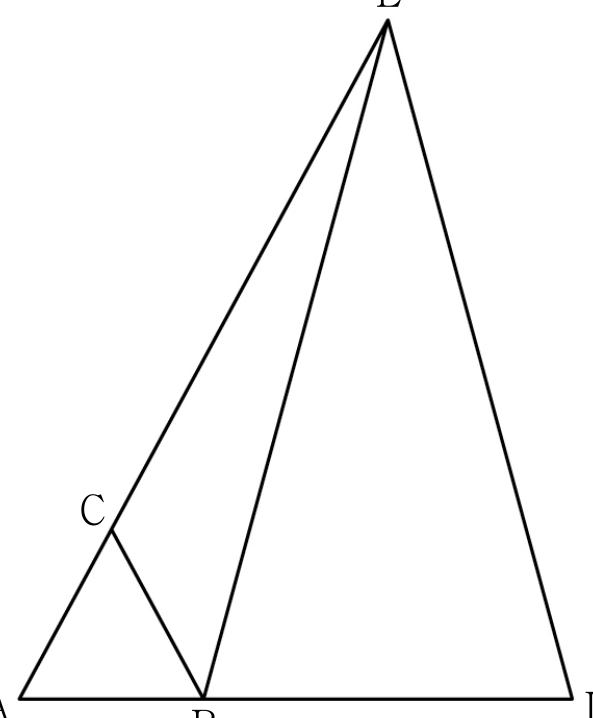
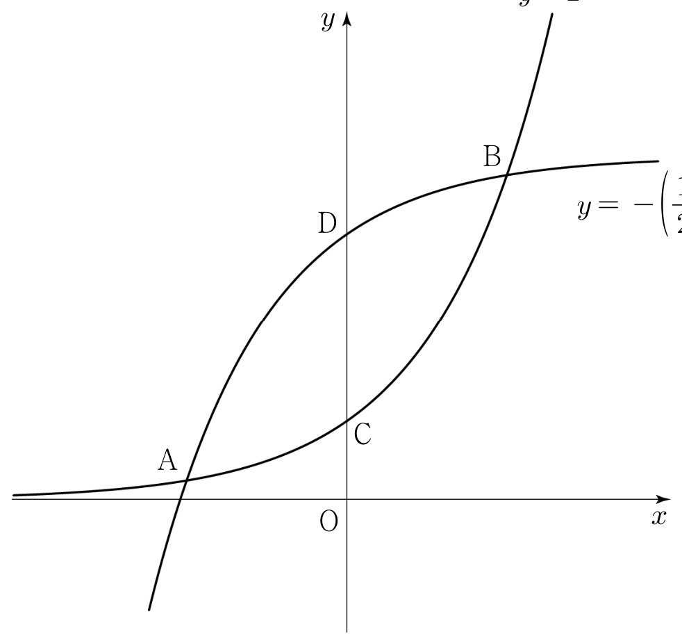
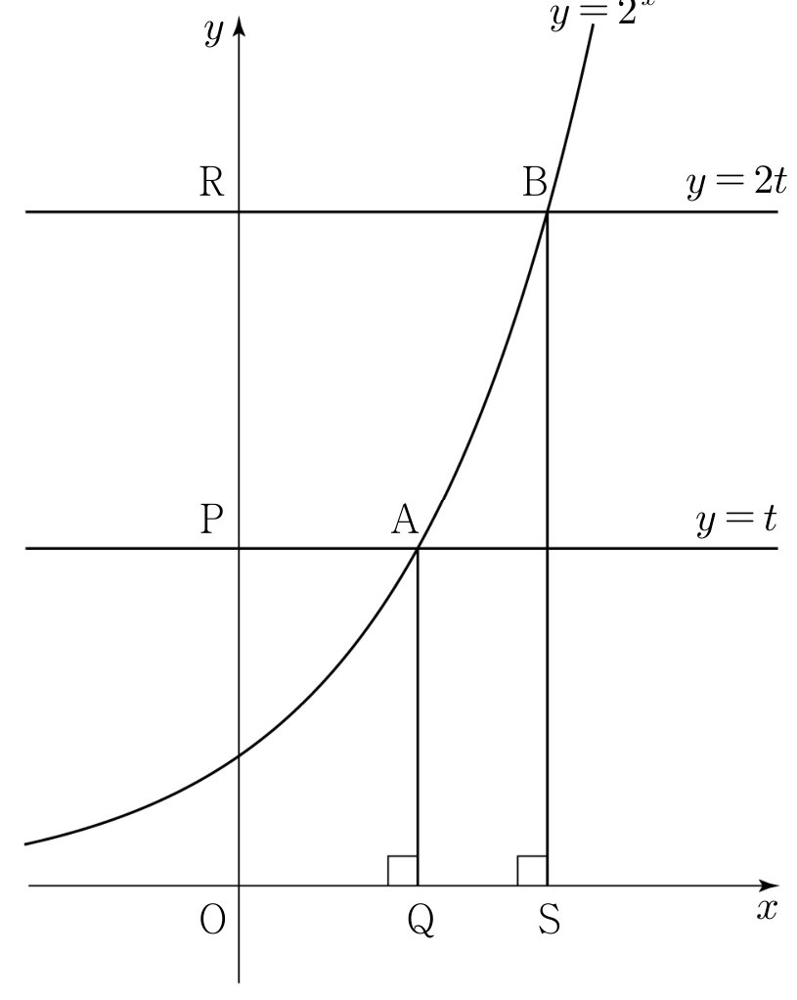
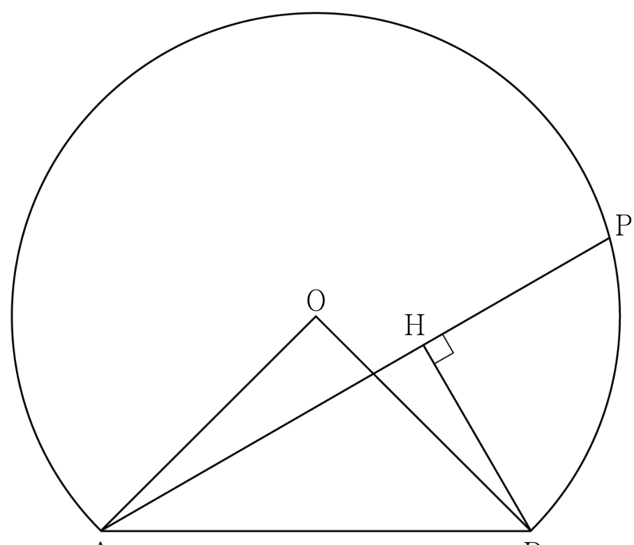

원본 (내부용)함수 \(y=f(x)\)의 그래프가 그림과 같다. 그래프 설명: \(x=-1\)에서 \((-1,1)\)은 열린 점, \((-1,-1)\)은 닫힌 점이다. \(x=-1\) 왼쪽에는 \((-1,1)\)을 향해 올라가는 직선이 있고, \(-1\le x<1\)에서는 \(y=-1\)인 수평선이 있다. \(x=1\)에서 \((1,-1)\)은 열린 점, \((1,1)\)은 닫힌 점, \((1,2)\)는 열린 점이다. \(x>1\)에서는 \((1,2)\)에서 시작하는 증가 곡선 \(y=f(x)\)가 그려져 있다. \( \lim_{x\to-1^-}f(x)+\lim_{x\to1^+}f(x) \) 의 값은? [3점]
① \(-1\)② \(0\)③ \(1\)④ \(2\)⑤ \(3\)
원본 정답 ⑤
원본 풀이 (내부용)[출제의도] 함수의 극한 이해하기
\(
\lim_{x\to-1^-} f(x)+\lim_{x\to1^+}f(x)=1+2=3
\)
생성기 숫자판 1/6 · G2f-09#0함수 $y=f\left(x\right)$의 그래프가 그림과 같습니다. $\lim_{x\to -2-}f\left(x\right)+\lim_{x\to 1+}f\left(x\right)$의 값으로 옳은 것을 고르세요.
① $2$② $3$③ $4$④ $5$⑤ $6$
정답③ $4$ $x\to -2-$일 때 $f\left(x\right)\to 1$ $x\to 1+$일 때 $f\left(x\right)\to 3$ 따라서 구하는 값은 $1+3=4$
원본 (내부용)삼각형 \(ABC\)에서 \( \frac{2}{\sin A}=\frac{3}{\sin B}=\frac{4}{\sin C} \) 일 때, \(\cos C\)의 값은? [3점]
① \(-\frac12\)② \(-\frac14\)③ \(0\)④ \(\frac14\)⑤ \(\frac12\)
원본 정답 ②
원본 풀이 (내부용)[출제의도] 사인법칙과 코사인법칙 이해하기
삼각형 \(ABC\)에서
\(
\overline{BC}=a,\quad \overline{CA}=b,\quad \overline{AB}=c
\)
라 하면 사인법칙에 의하여
\(
\frac{a}{\sin A}=\frac{b}{\sin B}=\frac{c}{\sin C}
\)
이므로 \(a:b:c=2:3:4\)
\(
a=2k,\quad b=3k,\quad c=4k\quad(k>0)
\)
라 하면 코사인법칙에 의하여
\(
\cos C=\frac{4k^2+9k^2-16k^2}{12k^2}=-\frac14
\)
생성기 숫자판 1/6 · G2M1-02#17삼각형 $\mathrm{ABC}$에서 $\frac{4}{\sin A}=\frac{6}{\sin B}=\frac{9}{\sin C}$일 때, $\cos C$의 값으로 옳은 것을 고르세요.
① $-\frac{65}{48}$② $-\frac{53}{48}$③ $-\frac{41}{48}$④ $-\frac{29}{48}$⑤ $-\frac{17}{48}$
정답④ $-\frac{29}{48}$ 사인법칙에 의하여 $a:b:c=\sin A:\sin B:\sin C=4:6:9$이므로 $a=4k$, $b=6k$, $c=9k\ \left(k>0\right)$라 하면 $\cos C=\frac{a^{2}+b^{2}-c^{2}}{2ab}=\frac{16k^{2}+36k^{2}-81k^{2}}{48k^{2}}$ $=-\frac{29}{48}$
숫자: 원본 2 3 4 → 쌍둥이 4 6 9 · 같은 수: 4
생성기 숫자판 2/6 · G2M1-02#17삼각형 $\mathrm{ABC}$에서 $\frac{2}{\sin A}=\frac{4}{\sin B}=\frac{5}{\sin C}$일 때, $\cos C$의 값으로 옳은 것을 고르세요.
① $-\frac{17}{16}$② $-\frac{13}{16}$③ $-\frac{9}{16}$④ $-\frac{5}{16}$⑤ $-\frac{1}{16}$
정답④ $-\frac{5}{16}$ 사인법칙에 의하여 $a:b:c=\sin A:\sin B:\sin C=2:4:5$이므로 $a=2k$, $b=4k$, $c=5k\ \left(k>0\right)$라 하면 $\cos C=\frac{a^{2}+b^{2}-c^{2}}{2ab}=\frac{4k^{2}+16k^{2}-25k^{2}}{16k^{2}}$ $=-\frac{5}{16}$
숫자: 원본 2 3 4 → 쌍둥이 2 4 5 · 같은 수: 2 4
생성기 숫자판 3/6 · G2M1-02#17삼각형 $\mathrm{ABC}$에서 $\frac{4}{\sin A}=\frac{2}{\sin B}=\frac{5}{\sin C}$일 때, $\cos C$의 값으로 옳은 것을 고르세요.
① $-\frac{21}{16}$② $-\frac{17}{16}$③ $-\frac{13}{16}$④ $-\frac{9}{16}$⑤ $-\frac{5}{16}$
정답⑤ $-\frac{5}{16}$ 사인법칙에 의하여 $a:b:c=\sin A:\sin B:\sin C=4:2:5$이므로 $a=4k$, $b=2k$, $c=5k\ \left(k>0\right)$라 하면 $\cos C=\frac{a^{2}+b^{2}-c^{2}}{2ab}=\frac{16k^{2}+4k^{2}-25k^{2}}{16k^{2}}$ $=-\frac{5}{16}$
숫자: 원본 2 3 4 → 쌍둥이 4 2 5 · 같은 수: 2 4
생성기 숫자판 4/6 · G2M1-02#17삼각형 $\mathrm{ABC}$에서 $\frac{4}{\sin A}=\frac{5}{\sin B}=\frac{8}{\sin C}$일 때, $\cos C$의 값으로 옳은 것을 고르세요.
① $-\frac{33}{40}$② $-\frac{23}{40}$③ $-\frac{13}{40}$④ $0$⑤ $\frac{23}{40}$
정답② $-\frac{23}{40}$ 사인법칙에 의하여 $a:b:c=\sin A:\sin B:\sin C=4:5:8$이므로 $a=4k$, $b=5k$, $c=8k\ \left(k>0\right)$라 하면 $\cos C=\frac{a^{2}+b^{2}-c^{2}}{2ab}=\frac{16k^{2}+25k^{2}-64k^{2}}{40k^{2}}$ $=-\frac{23}{40}$
숫자: 원본 2 3 4 → 쌍둥이 4 5 8 · 같은 수: 4
생성기 숫자판 5/6 · G2M1-02#17삼각형 $\mathrm{ABC}$에서 $\frac{4}{\sin A}=\frac{5}{\sin B}=\frac{6}{\sin C}$일 때, $\cos C$의 값으로 옳은 것을 고르세요.
① $-\frac{3}{8}$② $-\frac{1}{4}$③ $-\frac{1}{8}$④ $0$⑤ $\frac{1}{8}$
정답⑤ $\frac{1}{8}$ 사인법칙에 의하여 $a:b:c=\sin A:\sin B:\sin C=4:5:6$이므로 $a=4k$, $b=5k$, $c=6k\ \left(k>0\right)$라 하면 $\cos C=\frac{a^{2}+b^{2}-c^{2}}{2ab}=\frac{16k^{2}+25k^{2}-36k^{2}}{40k^{2}}$ $=\frac{1}{8}$
숫자: 원본 2 3 4 → 쌍둥이 4 5 6 · 같은 수: 4
생성기 숫자판 6/6 · G2M1-02#17삼각형 $\mathrm{ABC}$에서 $\frac{3}{\sin A}=\frac{4}{\sin B}=\frac{6}{\sin C}$일 때, $\cos C$의 값으로 옳은 것을 고르세요.
① $-\frac{11}{24}$② $-\frac{5}{24}$③ $0$④ $\frac{1}{24}$⑤ $\frac{11}{24}$
정답① $-\frac{11}{24}$ 사인법칙에 의하여 $a:b:c=\sin A:\sin B:\sin C=3:4:6$이므로 $a=3k$, $b=4k$, $c=6k\ \left(k>0\right)$라 하면 $\cos C=\frac{a^{2}+b^{2}-c^{2}}{2ab}=\frac{9k^{2}+16k^{2}-36k^{2}}{24k^{2}}$ $=-\frac{11}{24}$
숫자: 원본 2 3 4 → 쌍둥이 3 4 6 · 같은 수: 3 4
11. 2020년 9월 11번 · 3점 · 수학Ⅰ 수열 · G2M8-04#2
원본 (내부용)첫째항이 \(\frac15\)이고 공비가 양수인 등비수열 \(\{a_n\}\)에 대하여 \(a_4=4a_2\)일 때, \( \sum_{k=1}^{n}a_k=\frac{3}{13}\sum_{k=1}^{n}a_k^2 \) 을 만족시키는 자연수 \(n\)의 값은? [3점]
원본 (내부용)자연수 \(n\)에 대하여 좌표평면 위의 점 \((n,0)\)을 중심으로 하고 반지름의 길이가 \(1\)인 원을 \(O_n\)이라 하자. 점 \((-1,0)\)을 지나고 원 \(O_n\)과 제1사분면에서 접하는 직선의 기울기를 \(a_n\)이라 할 때, \( \sum_{n=1}^{5}a_n^2 \) 의 값은? [3점]
① \(\frac12\)② \(\frac{23}{42}\)③ \(\frac{25}{42}\)④ \(\frac9{14}\)⑤ \(\frac{29}{42}\)
원본 정답 ③
원본 풀이 (내부용)[출제의도] 여러 가지 수열의 합 이해하기
원의 중심 \((n,0)\)과 직선 \(a_n(x+1)-y=0\;(a_n>0)\) 사이의 거리는 원 \(O_n\)의 반지름의 길이인 \(1\)과 같으므로
\(
\frac{|a_n(n+1)|}{\sqrt{a_n^2+(-1)^2}}=1,\quad
\{a_n(n+1)\}^2=a_n^2+1
\)
\(
a_n^2(n^2+2n)=1,\quad a_n^2=\frac1{n(n+2)}
\)
따라서
\(
\begin{aligned}
\sum_{n=1}^{5}a_n^2
&=\sum_{n=1}^{5}\frac1{n(n+2)}\\
&=\frac12\left\{\sum_{n=1}^{5}\left(\frac1n-\frac1{n+2}\right)\right\}\\
&=\frac12\left(1+\frac12-\frac16-\frac17\right)=\frac{25}{42}
\end{aligned}
\)
생성기 숫자판 1/5 · G2M8-04#4자연수 $n$에 대하여 좌표평면 위의 점 $\left(n,\ 0\right)$을 중심으로 하고 반지름의 길이가 $1$인 원을 $O_{n}$이라 합시다. 점 $\left(-1,\ 0\right)$을 지나고 원 $O_{n}$과 제$1$사분면에서 접하는 직선의 기울기를 $a_{n}$이라 할 때, $\sum_{n=1}^{4}a_{n}^{2}$의 값으로 옳은 것을 고르세요.
① $\frac{11}{30}$② $\frac{13}{30}$③ $\frac{1}{2}$④ $\frac{17}{30}$⑤ $\frac{19}{30}$
정답④ $\frac{17}{30}$ 점 $\left(-1,\ 0\right)$과 원 $O_{n}$의 중심 $\left(n,\ 0\right)$ 사이의 거리는 $n+1$이고 반지름의 길이는 $1$ 접점까지의 거리는 $\sqrt{\left(n+1\right)^{2}-1}=\sqrt{n\left(n+2\right)}$이므로 $a_{n}=\frac{1}{\sqrt{n\left(n+2\right)}}$, $a_{n}^{2}=\frac{1}{n\left(n+2\right)}$ $\sum_{n=1}^{4}a_{n}^{2}=\frac{1}{2}\sum_{n=1}^{4}\left(\frac{1}{n}-\frac{1}{n+2}\right)$ $=\frac{1}{2}\left(1+\frac{1}{2}-\frac{1}{5}-\frac{1}{6}\right)$ $=\frac{17}{30}$
숫자: 원본 0 1 1 0 1 1 → 쌍둥이 0 1 1 0 1 1 · 같은 수: 0 1
생성기 숫자판 2/5 · G2M8-04#4자연수 $n$에 대하여 좌표평면 위의 점 $\left(n,\ 0\right)$을 중심으로 하고 반지름의 길이가 $1$인 원을 $O_{n}$이라 합시다. 점 $\left(-1,\ 0\right)$을 지나고 원 $O_{n}$과 제$1$사분면에서 접하는 직선의 기울기를 $a_{n}$이라 할 때, $\sum_{n=1}^{6}a_{n}^{2}$의 값으로 옳은 것을 고르세요.
① $\frac{67}{112}$② $\frac{69}{112}$③ $\frac{71}{112}$④ $\frac{73}{112}$⑤ $\frac{75}{112}$
정답② $\frac{69}{112}$ 점 $\left(-1,\ 0\right)$과 원 $O_{n}$의 중심 $\left(n,\ 0\right)$ 사이의 거리는 $n+1$이고 반지름의 길이는 $1$ 접점까지의 거리는 $\sqrt{\left(n+1\right)^{2}-1}=\sqrt{n\left(n+2\right)}$이므로 $a_{n}=\frac{1}{\sqrt{n\left(n+2\right)}}$, $a_{n}^{2}=\frac{1}{n\left(n+2\right)}$ $\sum_{n=1}^{6}a_{n}^{2}=\frac{1}{2}\sum_{n=1}^{6}\left(\frac{1}{n}-\frac{1}{n+2}\right)$ $=\frac{1}{2}\left(1+\frac{1}{2}-\frac{1}{7}-\frac{1}{8}\right)$ $=\frac{69}{112}$
숫자: 원본 0 1 1 0 1 1 → 쌍둥이 0 1 1 0 1 1 · 같은 수: 0 1
생성기 숫자판 3/5 · G2M8-04#4자연수 $n$에 대하여 좌표평면 위의 점 $\left(n,\ 0\right)$을 중심으로 하고 반지름의 길이가 $1$인 원을 $O_{n}$이라 합시다. 점 $\left(-1,\ 0\right)$을 지나고 원 $O_{n}$과 제$1$사분면에서 접하는 직선의 기울기를 $a_{n}$이라 할 때, $\sum_{n=1}^{9}a_{n}^{2}$의 값으로 옳은 것을 고르세요.
① $\frac{3}{5}$② $\frac{34}{55}$③ $\frac{7}{11}$④ $\frac{36}{55}$⑤ $\frac{37}{55}$
정답④ $\frac{36}{55}$ 점 $\left(-1,\ 0\right)$과 원 $O_{n}$의 중심 $\left(n,\ 0\right)$ 사이의 거리는 $n+1$이고 반지름의 길이는 $1$ 접점까지의 거리는 $\sqrt{\left(n+1\right)^{2}-1}=\sqrt{n\left(n+2\right)}$이므로 $a_{n}=\frac{1}{\sqrt{n\left(n+2\right)}}$, $a_{n}^{2}=\frac{1}{n\left(n+2\right)}$ $\sum_{n=1}^{9}a_{n}^{2}=\frac{1}{2}\sum_{n=1}^{9}\left(\frac{1}{n}-\frac{1}{n+2}\right)$ $=\frac{1}{2}\left(1+\frac{1}{2}-\frac{1}{10}-\frac{1}{11}\right)$ $=\frac{36}{55}$
숫자: 원본 0 1 1 0 1 1 → 쌍둥이 0 1 1 0 1 1 · 같은 수: 0 1
생성기 숫자판 4/5 · G2M8-04#4자연수 $n$에 대하여 좌표평면 위의 점 $\left(n,\ 0\right)$을 중심으로 하고 반지름의 길이가 $1$인 원을 $O_{n}$이라 합시다. 점 $\left(-1,\ 0\right)$을 지나고 원 $O_{n}$과 제$1$사분면에서 접하는 직선의 기울기를 $a_{n}$이라 할 때, $\sum_{n=1}^{8}a_{n}^{2}$의 값으로 옳은 것을 고르세요.
① $\frac{29}{45}$② $\frac{2}{3}$③ $\frac{31}{45}$④ $\frac{32}{45}$⑤ $\frac{11}{15}$
정답① $\frac{29}{45}$ 점 $\left(-1,\ 0\right)$과 원 $O_{n}$의 중심 $\left(n,\ 0\right)$ 사이의 거리는 $n+1$이고 반지름의 길이는 $1$ 접점까지의 거리는 $\sqrt{\left(n+1\right)^{2}-1}=\sqrt{n\left(n+2\right)}$이므로 $a_{n}=\frac{1}{\sqrt{n\left(n+2\right)}}$, $a_{n}^{2}=\frac{1}{n\left(n+2\right)}$ $\sum_{n=1}^{8}a_{n}^{2}=\frac{1}{2}\sum_{n=1}^{8}\left(\frac{1}{n}-\frac{1}{n+2}\right)$ $=\frac{1}{2}\left(1+\frac{1}{2}-\frac{1}{9}-\frac{1}{10}\right)$ $=\frac{29}{45}$
숫자: 원본 0 1 1 0 1 1 → 쌍둥이 0 1 1 0 1 1 · 같은 수: 0 1
생성기 숫자판 5/5 · G2M8-04#4자연수 $n$에 대하여 좌표평면 위의 점 $\left(n,\ 0\right)$을 중심으로 하고 반지름의 길이가 $1$인 원을 $O_{n}$이라 합시다. 점 $\left(-1,\ 0\right)$을 지나고 원 $O_{n}$과 제$1$사분면에서 접하는 직선의 기울기를 $a_{n}$이라 할 때, $\sum_{n=1}^{5}a_{n}^{2}$의 값으로 옳은 것을 고르세요.
① $\frac{23}{42}$② $\frac{25}{42}$③ $\frac{9}{14}$④ $\frac{29}{42}$⑤ $\frac{31}{42}$
정답② $\frac{25}{42}$ 점 $\left(-1,\ 0\right)$과 원 $O_{n}$의 중심 $\left(n,\ 0\right)$ 사이의 거리는 $n+1$이고 반지름의 길이는 $1$ 접점까지의 거리는 $\sqrt{\left(n+1\right)^{2}-1}=\sqrt{n\left(n+2\right)}$이므로 $a_{n}=\frac{1}{\sqrt{n\left(n+2\right)}}$, $a_{n}^{2}=\frac{1}{n\left(n+2\right)}$ $\sum_{n=1}^{5}a_{n}^{2}=\frac{1}{2}\sum_{n=1}^{5}\left(\frac{1}{n}-\frac{1}{n+2}\right)$ $=\frac{1}{2}\left(1+\frac{1}{2}-\frac{1}{6}-\frac{1}{7}\right)$ $=\frac{25}{42}$
숫자: 원본 0 1 1 0 1 1 → 쌍둥이 0 1 1 0 1 1 · 같은 수: 0 1
14. 2020년 9월 14번 · 4점 · 수학Ⅰ 삼각함수 · 4점 쌍둥이
원본 (내부용)\(0\le x<\pi\)일 때, \(x\)에 대한 방정식 \( \sin nx=\frac15 \qquad(n\text{은 자연수}) \) 의 모든 해의 합을 \(f(n)\)이라 하자. \(f(2)+f(5)\)의 값은? [4점]
① \(\frac32\pi\)② \(2\pi\)③ \(\frac52\pi\)④ \(3\pi\)⑤ \(\frac72\pi\)
원본 정답 ⑤
원본 풀이 (내부용)[출제의도] 삼각함수의 그래프 이해하기
\(y=\sin nx\)의 주기는 \(\dfrac{2\pi}{n}\)
(i) \(n=2\)일 때, \(y=\sin2x\)의 주기는 \(\pi\).
그래프는 \(0\le x<\pi\)에서 \(y=\sin2x\)와 직선 \(y=\frac15\)의 교점에 대해, 직선 \(x=\frac\pi4\)에 대하여 대칭인 해 2개가 있다. 따라서
\(
f(2)=\frac\pi4\times2=\frac\pi2
\)
(ii) \(n=5\)일 때, \(y=\sin5x\)의 주기는 \(\dfrac{2\pi}{5}\).
그래프는 \(0\le x<\pi\)에서 \(y=\sin5x\)와 직선 \(y=\frac15\)의 교점에 대해 세 직선
\(
x=\frac\pi{10},\quad x=\frac\pi2,\quad x=\frac{9\pi}{10}
\)
에 대하여 각각 대칭인 해를 2개씩 가지므로
\(
f(5)=\frac\pi{10}\times2+\frac\pi2\times2+\frac{9\pi}{10}\times2=3\pi
\)
(i), (ii)에 의하여
\(
f(2)+f(5)=\frac72\pi
\)
**그래프 설명:** \(y=\sin5x\) 곡선과 수평선 \(y=\frac15\)의 그래프. \(x\)축에는 \(0,\frac\pi{10},\frac\pi5,\frac{2\pi}5,\frac\pi2,\frac{3\pi}5,\frac{4\pi}5,\frac{9\pi}{10},\pi\)가 표시되어 있다.
쌍둥이 1/5 · 4점 쌍둥이$0\le x<\pi$에서 방정식 $\sin 5x=\frac37$의 해의 개수를 구하세요.
① $4$② $5$③ $6$④ $7$⑤ $8$
정답③ $6$ $y=5x$라 하면 $0\le y<5\pi$이다. 양의 사인값을 갖는 구간 $[0,\pi)$, $[2\pi,3\pi)$, $[4\pi,5\pi)$에서 각각 두 해가 있다. 따라서 해는 $2\cdot3=6$개이다.
숫자: 원본 0 15 2 5 → 쌍둥이 0 5 37 · 같은 수: 0 5
쌍둥이 2/5 · 4점 쌍둥이$0\le x<\pi$일 때, $x$에 대한 방정식 $\sin nx=\frac{1}{3}$ ($n$은 자연수)의 모든 해의 합을 $f\left(n\right)$이라 합시다. $f\left(3\right)+f\left(6\right)$의 값으로 옳은 것을 고르세요.
① $\frac{15}{4}\pi$② $4\pi$③ $\frac{17}{4}\pi$④ $\frac{9}{2}\pi$⑤ $\frac{19}{4}\pi$
정답④ $\frac{9}{2}\pi$ $f\left(3\right)$: $nx=t$라 하면 $0\le t<3\pi$에서 $\sin t=\frac{1}{3}$의 해는 직선 $t=\frac{\pi}{2}+2k\pi$에 대하여 짝을 이루는 $4$개이고 합은 $\pi+5\pi$, 따라서 $f\left(3\right)=2\pi$ $f\left(6\right)$: $nx=t$라 하면 $0\le t<6\pi$에서 $\sin t=\frac{1}{3}$의 해는 직선 $t=\frac{\pi}{2}+2k\pi$에 대하여 짝을 이루는 $6$개이고 합은 $\pi+5\pi+9\pi$, 따라서 $f\left(6\right)=\frac{5}{2}\pi$ $f\left(3\right)+f\left(6\right)=2\pi+\frac{5}{2}\pi=\frac{9}{2}\pi$
숫자: 원본 0 15 2 5 → 쌍둥이 0 1 3 3 6 · 같은 수: 0
쌍둥이 3/5 · 4점 쌍둥이$0\le x<\pi$일 때, $x$에 대한 방정식 $\sin nx=\frac{1}{4}$ ($n$은 자연수)의 모든 해의 합을 $f\left(n\right)$이라 합시다. $f\left(4\right)+f\left(5\right)$의 값으로 옳은 것을 고르세요.
① $\frac{17}{4}\pi$② $\frac{9}{2}\pi$③ $\frac{19}{4}\pi$④ $5\pi$⑤ $\frac{21}{4}\pi$
정답② $\frac{9}{2}\pi$ $f\left(4\right)$: $nx=t$라 하면 $0\le t<4\pi$에서 $\sin t=\frac{1}{4}$의 해는 직선 $t=\frac{\pi}{2}+2k\pi$에 대하여 짝을 이루는 $4$개이고 합은 $\pi+5\pi$, 따라서 $f\left(4\right)=\frac{3}{2}\pi$ $f\left(5\right)$: $nx=t$라 하면 $0\le t<5\pi$에서 $\sin t=\frac{1}{4}$의 해는 직선 $t=\frac{\pi}{2}+2k\pi$에 대하여 짝을 이루는 $6$개이고 합은 $\pi+5\pi+9\pi$, 따라서 $f\left(5\right)=3\pi$ $f\left(4\right)+f\left(5\right)=\frac{3}{2}\pi+3\pi=\frac{9}{2}\pi$
숫자: 원본 0 15 2 5 → 쌍둥이 0 1 4 4 5 · 같은 수: 0 5
쌍둥이 4/5 · 4점 쌍둥이$0\le x<\pi$일 때, $x$에 대한 방정식 $\sin nx=\frac{2}{5}$ ($n$은 자연수)의 모든 해의 합을 $f\left(n\right)$이라 합시다. $f\left(2\right)+f\left(3\right)$의 값으로 옳은 것을 고르세요.
① $\frac{3}{2}\pi$② $\frac{7}{4}\pi$③ $2\pi$④ $\frac{9}{4}\pi$⑤ $\frac{5}{2}\pi$
정답⑤ $\frac{5}{2}\pi$ $f\left(2\right)$: $nx=t$라 하면 $0\le t<2\pi$에서 $\sin t=\frac{2}{5}$의 해는 직선 $t=\frac{\pi}{2}+2k\pi$에 대하여 짝을 이루는 $2$개이고 합은 $\pi$, 따라서 $f\left(2\right)=\frac{\pi}{2}$ $f\left(3\right)$: $nx=t$라 하면 $0\le t<3\pi$에서 $\sin t=\frac{2}{5}$의 해는 직선 $t=\frac{\pi}{2}+2k\pi$에 대하여 짝을 이루는 $4$개이고 합은 $\pi+5\pi$, 따라서 $f\left(3\right)=2\pi$ $f\left(2\right)+f\left(3\right)=\frac{\pi}{2}+2\pi=\frac{5}{2}\pi$
숫자: 원본 0 15 2 5 → 쌍둥이 0 2 5 2 3 · 같은 수: 0 2 5
쌍둥이 5/5 · 4점 쌍둥이$0\le x<\pi$에서 방정식 $\sin 4x=\frac25$의 해의 개수를 구하세요.
① $2$② $3$③ $4$④ $5$⑤ $6$
정답③ $4$ $y=4x$라 하면 $0\le y<4\pi$이다. 각 구간 $[2j\pi,(2j+1)\pi)$ ($j=0,1$)에서 $\sin y=\frac25$는 두 해를 갖고, 나머지 구간에서는 해가 없다. 따라서 해는 $2\cdot2=4$개이다.
숫자: 원본 0 15 2 5 → 쌍둥이 0 4 25 · 같은 수: 0
15. 2020년 9월 15번 · 4점 · 수학Ⅰ 지수·로그 · 4점 쌍둥이
원본 (내부용)\(-1\le x\le1\)에서 정의된 함수 \( f(x)=-\log_3(mx+5) \) 에 대하여 \(f(-1)<f(1)\)이 되도록 하는 모든 정수 \(m\)의 개수는? [4점]
① \(1\)② \(2\)③ \(3\)④ \(4\)⑤ \(5\)
원본 정답 ④
원본 풀이 (내부용)[출제의도] 로그함수의 그래프 이해하기
함수 \(f(x)=-\log_3(mx+5)\)는 \(-1\le x\le1\)에서 정의되므로
\(
-5<m<5
\)
\(f(-1)<f(1)\)이므로 \(m<0\).
따라서 \(-5<m<0\)인 모든 정수 \(m\)의 개수는 4
쌍둥이 1/5 · 4점 쌍둥이$-1\le x\le1$에서 정의된 $f(x)=\log_2(mx+11)$에 대하여 $f(-1)<f(1)$을 만족시키는 모든 정수 $m$의 합을 구하세요.
① $45$② $50$③ $55$④ $60$⑤ $65$
정답③ $55$ 로그함수는 증가함수이므로 $11-m<11+m$, 즉 $m>0$ 로그의 진수가 구간 전체에서 양수이려면 $11-|m|>0$, 따라서 $m=1,2,\ldots,10$ 합은 $1+2+\cdots+10=55$
숫자: 원본 1 1 3 5 1 1 → 쌍둥이 1 1 2 11 1 1 · 같은 수: 1
쌍둥이 2/5 · 4점 쌍둥이$-1\le x\le 1$에서 정의된 함수 $f\left(x\right)=-\log_{2}\left(mx+7\right)$에 대하여 $f\left(-1\right)<f\left(1\right)$이 되도록 하는 모든 정수 $m$의 개수로 옳은 것을 고르세요.
① $6$② $7$③ $8$④ $9$⑤ $10$
정답① $6$ $-1\le x\le 1$에서 $mx+7>0$이어야 하므로 $-m+7>0$, $m+7>0$, 즉 $-7<m<7$ $f\left(-1\right)<f\left(1\right)$에서 $-\log_{2}\left(7-m\right)<-\log_{2}\left(7+m\right)$, $\log_{2}\left(7-m\right)>\log_{2}\left(7+m\right)$ 밑 $2$가 $1$보다 크므로 $7-m>7+m$, $m<0$ 정수 $m$은 $-6$, $-5$, $-4$, $-3$, $-2$, $-1$의 $6$개
숫자: 원본 1 1 3 5 1 1 → 쌍둥이 1 1 2 7 1 1 · 같은 수: 1
쌍둥이 3/5 · 4점 쌍둥이$-1\le x\le 1$에서 정의된 함수 $f\left(x\right)=\log_{3}\left(mx+4\right)$에 대하여 $f\left(-1\right)<f\left(1\right)$이 되도록 하는 모든 정수 $m$의 개수로 옳은 것을 고르세요.
① $1$② $2$③ $3$④ $4$⑤ $5$
정답③ $3$ $-1\le x\le 1$에서 $mx+4>0$이어야 하므로 $-m+4>0$, $m+4>0$, 즉 $-4<m<4$ $f\left(-1\right)<f\left(1\right)$에서 $\log_{3}\left(4-m\right)<\log_{3}\left(4+m\right)$ 밑 $3$이 $1$보다 크므로 $4-m<4+m$, $m>0$ 정수 $m$은 $1$, $2$, $3$의 $3$개
숫자: 원본 1 1 3 5 1 1 → 쌍둥이 1 1 3 4 1 1 · 같은 수: 1 3
쌍둥이 4/5 · 4점 쌍둥이$-1\le x\le 1$에서 정의된 함수 $f\left(x\right)=\log_{2}\left(mx+6\right)$에 대하여 $f\left(-1\right)<f\left(1\right)$이 되도록 하는 모든 정수 $m$의 개수로 옳은 것을 고르세요.
① $2$② $3$③ $4$④ $5$⑤ $6$
정답④ $5$ $-1\le x\le 1$에서 $mx+6>0$이어야 하므로 $-m+6>0$, $m+6>0$, 즉 $-6<m<6$ $f\left(-1\right)<f\left(1\right)$에서 $\log_{2}\left(6-m\right)<\log_{2}\left(6+m\right)$ 밑 $2$가 $1$보다 크므로 $6-m<6+m$, $m>0$ 정수 $m$은 $1$, $2$, $3$, $4$, $5$의 $5$개
숫자: 원본 1 1 3 5 1 1 → 쌍둥이 1 1 2 6 1 1 · 같은 수: 1
쌍둥이 5/5 · 4점 쌍둥이$-1\le x\le1$에서 정의된 $f(x)=\log_3(mx+9)$에 대하여 $f(-1)<f(1)$을 만족시키는 모든 정수 $m$의 합을 구하세요.
① $28$② $32$③ $36$④ $40$⑤ $44$
정답③ $36$ 로그함수는 증가함수이므로 $9-m<9+m$, 즉 $m>0$ 진수가 구간 전체에서 양수이려면 $9-|m|>0$, 따라서 $m=1,2,\ldots,8$ 합은 $1+2+\cdots+8=36$
숫자: 원본 1 1 3 5 1 1 → 쌍둥이 1 1 3 9 1 1 · 같은 수: 1 3
16. 2020년 9월 16번 · 4점 · 수학Ⅰ 지수·로그 · 4점 쌍둥이
원본 (내부용)그림과 같이 한 변의 길이가 \(1\)인 정삼각형 \(ABC\)에서 선분 \(AB\)의 연장선과 선분 \(AC\)의 연장선 위에 \(\overline{AD}=\overline{CE}\)가 되도록 두 점 \(D,E\)를 잡는다. \(\overline{DE}=\sqrt{13}\)일 때, 삼각형 \(BDE\)의 넓이는? [4점] 도형 설명: \(A,B,D\)는 한 직선 위에 순서대로 놓이고, \(C\)는 정삼각형 \(ABC\)의 세 번째 꼭짓점이다. \(A,C,E\)는 한 직선 위에 순서대로 놓인다. 선분 \(BC\), \(BE\), \(DE\)가 그려져 있다.

① \(\sqrt6\)② \(2\sqrt2\)③ \(\sqrt{10}\)④ \(2\sqrt3\)⑤ \(\sqrt{14}\)
원본 정답 ④
원본 풀이 (내부용)[출제의도] 코사인법칙을 활용하여 문제 해결하기
\(
\overline{AD}=\overline{CE}=a\quad(a>0)
\)
이라 하면 삼각형 \(ADE\)에서 코사인법칙에 의하여
\(
(\sqrt{13})^2=a^2+(a+1)^2-2a(a+1)\cos\frac\pi3
\)
\(
a^2+a-12=0,\quad(a+4)(a-3)=0,\quad a=3
\)
\(
(\triangle ADE\text{의 넓이})
=\frac12\times4\times3\times\sin\frac\pi3=3\sqrt3
\)
\(
(\triangle ABE\text{의 넓이})
=\frac12\times4\times1\times\sin\frac\pi3=\sqrt3
\)
따라서 \((\triangle BDE\text{의 넓이})\)
\(
=(\triangle ADE\text{의 넓이})-(\triangle ABE\text{의 넓이})
=2\sqrt3
\)
쌍둥이 1/5 · 4점 쌍둥이한 변의 길이가 $1$인 정삼각형 $ABC$에서 선분 $AB$의 연장선과 선분 $AC$의 연장선 위에 $\overline{AD}=\overline{CE}$가 되도록 두 점 $D$, $E$를 잡습니다. (단, 점 $B$는 선분 $AD$ 위에, 점 $C$는 선분 $AE$ 위에 있습니다.) $\overline{DE}=\sqrt{21}$일 때, 삼각형 $BDE$의 넓이로 옳은 것을 고르세요.
① $\frac{15\sqrt{3}}{4}$② $\frac{75\sqrt{3}}{16}$③ $\frac{45\sqrt{3}}{8}$④ $\frac{105\sqrt{3}}{16}$⑤ $\frac{15\sqrt{3}}{2}$
정답① $\frac{15\sqrt{3}}{4}$ $\overline{AD}=\overline{CE}=t$라 하면 $\overline{AE}=1+t$이고 $\angle DAE=\frac{\pi}{3}$입니다. 코사인법칙에서 $\overline{DE}^{2}=t^{2}+(1+t)^{2}-t(1+t)=t^{2}+t+1=21$이므로 $t=4$ 삼각형 $BDE$의 넓이는 삼각형 $ADE$의 넓이에서 삼각형 $ABE$의 넓이를 뺀 것이므로 $\frac{1}{2}\times4\times5\times\frac{\sqrt{3}}{2}-\frac{1}{2}\times1\times5\times\frac{\sqrt{3}}{2}$ $=\frac{\sqrt{3}}{4}\times5\times3=\frac{15\sqrt{3}}{4}$
숫자: 원본 1 13 → 쌍둥이 1 21 · 같은 수: 1
쌍둥이 2/5 · 4점 쌍둥이한 변의 길이가 $2$인 정삼각형 $ABC$에서 선분 $AB$의 연장선과 선분 $AC$의 연장선 위에 $\overline{AD}=\overline{CE}$가 되도록 두 점 $D$, $E$를 잡습니다. (단, 점 $B$는 선분 $AD$ 위에, 점 $C$는 선분 $AE$ 위에 있습니다.) $\overline{DE}=\sqrt{19}$일 때, 삼각형 $BDE$의 넓이로 옳은 것을 고르세요.
① $0$② $\frac{5\sqrt{3}}{16}$③ $\frac{5\sqrt{3}}{8}$④ $\frac{15\sqrt{3}}{16}$⑤ $\frac{5\sqrt{3}}{4}$
정답⑤ $\frac{5\sqrt{3}}{4}$ $\overline{AD}=\overline{CE}=t$라 하면 $\overline{AE}=2+t$이고 $\angle DAE=\frac{\pi}{3}$입니다. 코사인법칙에서 $\overline{DE}^{2}=t^{2}+(2+t)^{2}-t(2+t)=t^{2}+2t+4=19$이므로 $t=3$ 삼각형 $BDE$의 넓이는 삼각형 $ADE$의 넓이에서 삼각형 $ABE$의 넓이를 뺀 것이므로 $\frac{1}{2}\times3\times5\times\frac{\sqrt{3}}{2}-\frac{1}{2}\times2\times5\times\frac{\sqrt{3}}{2}$ $=\frac{\sqrt{3}}{4}\times5\times1=\frac{5\sqrt{3}}{4}$
숫자: 원본 1 13 → 쌍둥이 2 19
쌍둥이 3/5 · 4점 쌍둥이한 변의 길이가 $3$인 정삼각형 $ABC$에서 선분 $AB$의 연장선과 선분 $AC$의 연장선 위에 $\overline{AD}=\overline{CE}$가 되도록 두 점 $D$, $E$를 잡습니다. (단, 점 $B$는 선분 $AD$ 위에, 점 $C$는 선분 $AE$ 위에 있습니다.) $\overline{DE}=7$일 때, 삼각형 $BDE$의 넓이로 옳은 것을 고르세요.
① $3\sqrt{3}$② $4\sqrt{3}$③ $5\sqrt{3}$④ $6\sqrt{3}$⑤ $7\sqrt{3}$
정답② $4\sqrt{3}$ $\overline{AD}=\overline{CE}=t$라 하면 $\overline{AE}=3+t$이고 $\angle DAE=\frac{\pi}{3}$입니다. 코사인법칙에서 $\overline{DE}^{2}=t^{2}+(3+t)^{2}-t(3+t)=t^{2}+3t+9=49$이므로 $t=5$ 삼각형 $BDE$의 넓이는 삼각형 $ADE$의 넓이에서 삼각형 $ABE$의 넓이를 뺀 것이므로 $\frac{1}{2}\times5\times8\times\frac{\sqrt{3}}{2}-\frac{1}{2}\times3\times8\times\frac{\sqrt{3}}{2}$ $=\frac{\sqrt{3}}{4}\times8\times2=4\sqrt{3}$
숫자: 원본 1 13 → 쌍둥이 3 7
쌍둥이 4/5 · 4점 쌍둥이한 변의 길이가 $3$인 정삼각형 $ABC$에서 선분 $AB$의 연장선과 선분 $AC$의 연장선 위에 $\overline{AD}=\overline{CE}$가 되도록 두 점 $D$, $E$를 잡습니다. (단, 점 $B$는 선분 $AD$ 위에, 점 $C$는 선분 $AE$ 위에 있습니다.) $\overline{DE}=3\sqrt{7}$일 때, 삼각형 $BDE$의 넓이로 옳은 것을 고르세요.
① $\frac{9\sqrt{3}}{4}$② $\frac{9\sqrt{3}}{2}$③ $\frac{27\sqrt{3}}{4}$④ $9\sqrt{3}$⑤ $\frac{45\sqrt{3}}{4}$
정답③ $\frac{27\sqrt{3}}{4}$ $\overline{AD}=\overline{CE}=t$라 하면 $\overline{AE}=3+t$이고 $\angle DAE=\frac{\pi}{3}$입니다. 코사인법칙에서 $\overline{DE}^{2}=t^{2}+(3+t)^{2}-t(3+t)=t^{2}+3t+9=63$이므로 $t=6$ 삼각형 $BDE$의 넓이는 삼각형 $ADE$의 넓이에서 삼각형 $ABE$의 넓이를 뺀 것이므로 $\frac{1}{2}\times6\times9\times\frac{\sqrt{3}}{2}-\frac{1}{2}\times3\times9\times\frac{\sqrt{3}}{2}$ $=\frac{\sqrt{3}}{4}\times9\times3=\frac{27\sqrt{3}}{4}$
숫자: 원본 1 13 → 쌍둥이 3 3 7
쌍둥이 5/5 · 4점 쌍둥이한 변의 길이가 $4$인 정삼각형 $ABC$에서 선분 $AB$의 연장선과 선분 $AC$의 연장선 위에 $\overline{AD}=\overline{CE}$가 되도록 두 점 $D$, $E$를 잡습니다. (단, 점 $B$는 선분 $AD$ 위에, 점 $C$는 선분 $AE$ 위에 있습니다.) $\overline{DE}=\sqrt{61}$일 때, 삼각형 $BDE$의 넓이로 옳은 것을 고르세요.
① $\frac{3\sqrt{3}}{4}$② $\frac{3\sqrt{3}}{2}$③ $\frac{9\sqrt{3}}{4}$④ $3\sqrt{3}$⑤ $\frac{9\sqrt{3}}{2}$
정답③ $\frac{9\sqrt{3}}{4}$ $\overline{AD}=\overline{CE}=t$라 하면 $\overline{AE}=4+t$이고 $\angle DAE=\frac{\pi}{3}$입니다. 코사인법칙에서 $\overline{DE}^{2}=t^{2}+(4+t)^{2}-t(4+t)=t^{2}+4t+16=61$이므로 $t=5$ 삼각형 $BDE$의 넓이는 삼각형 $ADE$의 넓이에서 삼각형 $ABE$의 넓이를 뺀 것이므로 $\frac{1}{2}\times5\times9\times\frac{\sqrt{3}}{2}-\frac{1}{2}\times4\times9\times\frac{\sqrt{3}}{2}$ $=\frac{\sqrt{3}}{4}\times9\times1=\frac{9\sqrt{3}}{4}$
숫자: 원본 1 13 → 쌍둥이 4 61
17. 2020년 9월 17번 · 4점 · 수학Ⅰ 수열 · 4점 쌍둥이
원본 (내부용)공차가 정수인 등차수열 \(\{a_n\}\)이 다음 조건을 만족시킨다. (가) \(a_7=37\) (나) 모든 자연수 \(n\)에 대하여 \( \sum_{k=1}^{n}a_k\le\sum_{k=1}^{13}a_k \) \( \sum_{k=1}^{21}|a_k| \) 의 값은? [4점]
① \(681\)② \(683\)③ \(685\)④ \(687\)⑤ \(689\)
원본 정답 ⑤
원본 풀이 (내부용)[출제의도] 등차수열의 성질을 활용하여 문제 해결하기
등차수열 \(\{a_n\}\)의 공차를 \(d\)라 하면 조건 (가)에 의하여 \(a_7=a_1+6d=37\).
조건 (나)에 의하여 \(a_{13}\ge0\)이고 \(a_{14}\le0\)
\(
a_1+12d\ge0,\quad37+6d\ge0,\quad-\frac{37}{6}\le d
\)
\(
a_1+13d\le0,\quad37+7d\le0,\quad d\le-\frac{37}{7}
\)
\(
-\frac{37}{6}\le d\le-\frac{37}{7}
\)
이고 \(d\)는 정수이므로
\(
d=-6,\quad a_1=73
\)
따라서
\(
\begin{aligned}
\sum_{k=1}^{21}|a_k|
&=|a_1|+|a_2|+\cdots+|a_{21}|\\
&=a_1+a_2+\cdots+a_{13}+(-a_{14})+(-a_{15})+\cdots+(-a_{21})\\
&=(a_1+a_2+\cdots+a_{13})-(a_{14}+a_{15}+\cdots+a_{21})\\
&=\sum_{k=1}^{13}a_k-\left(\sum_{k=1}^{21}a_k-\sum_{k=1}^{13}a_k\right)\\
&=2\sum_{k=1}^{13}a_k-\sum_{k=1}^{21}a_k\\
&=2\times\frac{13\{2\times73+12\times(-6)\}}2
-\frac{21\{2\times73+20\times(-6)\}}2=689
\end{aligned}
\)
---
쌍둥이 1/5 · 4점 쌍둥이공차가 정수인 등차수열 $\{a_{n}\}$이 다음 조건을 만족시킵니다. (가) $a_{5}=29$ (나) 모든 자연수 $n$에 대하여 $\sum_{k=1}^{n}a_{k}\le\sum_{k=1}^{10}a_{k}$ $\sum_{k=1}^{18}|a_{k}|$의 값으로 옳은 것을 고르세요.
쌍둥이 2/5 · 4점 쌍둥이공차가 정수인 등차수열 $\{a_{n}\}$이 다음 조건을 만족시킵니다. (가) $a_{6}=31$ (나) 모든 자연수 $n$에 대하여 $\sum_{k=1}^{n}a_{k}\le\sum_{k=1}^{12}a_{k}$ $\sum_{k=1}^{20}|a_{k}|$의 값으로 옳은 것을 고르세요.
쌍둥이 3/5 · 4점 쌍둥이공차가 정수인 등차수열 $\{a_{n}\}$이 다음 조건을 만족시킵니다. (가) $a_{8}=40$ (나) 모든 자연수 $n$에 대하여 $\sum_{k=1}^{n}a_{k}\le\sum_{k=1}^{15}a_{k}$ $\sum_{k=1}^{22}|a_{k}|$의 값으로 옳은 것을 고르세요.
쌍둥이 5/5 · 4점 쌍둥이공차가 정수인 등차수열 $\{a_n\}$이 $a_9=45$이고 모든 자연수 $n$에 대하여 $S_n\le S_{17}$을 만족시킵니다. $\sum_{k=1}^{25}|a_k|$의 값은? (단, $S_n=\sum_{k=1}^n a_k$)
① $856$② $858$③ $860$④ $862$⑤ $864$
정답③ $860$ S_n의 최대가 n=17에서이므로 a_17≥0, a_18≤0이다. a_9=45에서 정수 공차 d는 −5이다. a_n=85−5n이므로 a_1=80, a_17=0이다. 처음 17항의 합은 17(80+0)/2=680이다. 18항부터 25항까지 절댓값은 5,10,…,40으로 합은 8(5+40)/2=180이다. 따라서 답은 860이다.
숫자: 원본 7 37 1 1 1 → 쌍둥이 9 45 17 1 1 · 같은 수: 1
18. 2020년 9월 18번 · 4점 · 수학Ⅰ 지수·로그 · 4점 쌍둥이
원본 (내부용)그림과 같이 \(2\)보다 큰 실수 \(t\)에 대하여 두 곡선 \( y=2^x\quad\text{와}\quad y=-\left(\frac12\right)^x+t \) 가 만나는 점을 각각 \(A,B\)라 하고, 두 곡선 \(y=2^x,\ y=-\left(\frac12\right)^x+t\)와 \(y\)축이 만나는 점을 각각 \(C,D\)라 하자. \<보기\>에서 옳은 것만을 있는 대로 고른 것은? (단, \(O\)는 원점이다.) [4점] \<보기\> ㄱ. \(\overline{CD}=t-2\) ㄴ. \(\overline{AC}=\overline{DB}\) ㄷ. 삼각형 \(ABD\)의 넓이는 삼각형 \(AOB\)의 넓이의 \(\frac{t-2}{t}\)배이다.

① ㄱ② ㄴ③ ㄱ, ㄴ④ ㄱ, ㄷ⑤ ㄱ, ㄴ, ㄷ
원본 정답 ⑤
원본 풀이 (내부용)[출제의도] 지수함수의 성질을 활용하여 문제 해결하기
**그래프 설명:** \(y=2^x\), \(y=-\left(\frac12\right)^x+t\) 그래프와 점 \(A,B,C,D,E,O\)가 표시된 좌표평면. \(A,B\)의 \(x\)좌표는 각각 \(\alpha,\beta\;(\alpha<0<\beta)\). \(A=(\alpha,2^\alpha)\), \(B=(\beta,2^\beta)\), \(C=(0,1)\), \(D=(0,t-1)\). 평행사변형 \(ABCD\)의 두 대각선이 \(E\)에서 만난다.
점 \(A,B\)의 \(x\)좌표를 각각 \(\alpha,\beta\;(\alpha<0<\beta)\)라 하면 \(\alpha,\beta\)는 방정식
\(
(2^x)^2-t\times2^x+1=0
\)
의 두 근이므로
\(
2^\alpha+2^\beta=t,\quad 2^\alpha\times2^\beta=1
\)
따라서 \(\alpha+\beta=0,\quad\beta=-\alpha\)
네 점 \(A(\alpha,2^\alpha), B(\beta,2^\beta), C(0,1), D(0,t-1)\)에 대하여
ㄱ. \(\overline{CD}=t-2\) (참)
ㄴ.
\(
\begin{aligned}
\overline{AC}
&=\sqrt{(-\alpha)^2+(-2^\alpha+1)^2}\\
&=\sqrt{\beta^2+(2^\beta-t+1)^2}=\overline{DB}\quad(\text{참})
\end{aligned}
\)
ㄷ.
\(
\overline{AD}
=\sqrt{\alpha^2+(2^\alpha-t+1)^2}
=\sqrt{(-\beta)^2+(-2^\beta+1)^2}
=\overline{CB}
\)
\(\overline{AC}=\overline{DB},\;\overline{AD}=\overline{CB}\)이므로 사각형 \(ACBD\)는 평행사변형이고 두 대각선의 교점을 \(E\)라 하면
\(
\overline{CE}=\overline{DE}
\)
이므로 점 \(E\)의 좌표는 \(\left(0,\frac t2\right)\)
\(
\begin{aligned}
(\triangle ABD\text{의 넓이})
&=(\triangle AED\text{의 넓이})+(\triangle BDE\text{의 넓이})\\
&=\frac12\times(-\alpha)\times\overline{DE}
+\frac12\times\beta\times\overline{DE}\\
&=\frac12\times\left(\frac{t-2}{2}\right)(-\alpha+\beta)\\
&=\frac{(t-2)(-\alpha+\beta)}4
=\frac{\beta(t-2)}2
\end{aligned}
\)
\(
\begin{aligned}
(\triangle AOB\text{의 넓이})
&=(\triangle OEA\text{의 넓이})+(\triangle OBE\text{의 넓이})\\
&=\frac12\times(-\alpha)\times\overline{OE}
+\frac12\times\beta\times\overline{OE}\\
&=\frac{t(-\alpha+\beta)}4=\frac{\beta t}2
\end{aligned}
\)
따라서 삼각형 \(ABD\)의 넓이는 삼각형 \(AOB\)의 넓이의 \(\dfrac{t-2}{t}\)배이다. (참)
쌍둥이 1/5 · 4점 쌍둥이실수 $t>2$와 밑 $b=6$에 대하여 두 곡선 $y=6^x$, $y=-(6^{-1})^x+t$의 교점을 $A,B$라 하고, 각 곡선과 $y$축의 교점을 각각 $C,D$라 하자. (단, $x_A<x_B$.) 다음 보기에서 옳은 것만을 고르시오. <보기> ㄱ. $CD=t-1$. ㄴ. $AC=DB$. ㄷ. 삼각형 $ABD$의 넓이는 삼각형 $AOB$의 넓이의 $(t-2)/t$배이다.
① ㄱ② ㄴ③ ㄷ④ ㄱ, ㄴ⑤ ㄴ, ㄷ
정답③ ㄷ 두 곡선의 교점에서 $u=b^x$라 두면 $u+1/u=t$. $x_A=-x_B$이고 교점의 높이는 $1/u,u$. 또한 $C=(0,1)$, $D=(0,t-1)$이므로 $CD=t-2$이고 ㄱ은 거짓. 대칭인 점들의 거리 계산에서 $AC^2=x_B^2+(1-1/u)^2=DB^2$, 따라서 ㄴ은 참. 삼각형 넓이는 $[AOB]=x_Bt/2$, $[ABD]=x_B(t-2)/2$이므로 넓이의 비는 $(t-2)/t$. ㄷ은 참이다.
쌍둥이 2/5 · 4점 쌍둥이$2$보다 큰 실수 $t$에 대하여 두 곡선 $y=3^{x}$과 $y=-\left(\frac{1}{3}\right)^{x}+t$가 만나는 두 점을 각각 $A$, $B$라 하고, 두 곡선 $y=3^{x}$, $y=-\left(\frac{1}{3}\right)^{x}+t$와 $y$축이 만나는 점을 각각 $C$, $D$라 합니다. <보기>에서 옳은 것만을 있는 대로 고른 것을 고르세요. (단, $O$는 원점이고, 점 $A$의 $x$좌표는 점 $B$의 $x$좌표보다 작습니다.) <보기> ㄱ. $\overline{CD}=t-2$ ㄴ. $\overline{AC}=\overline{DB}$ ㄷ. 삼각형 $ABD$의 넓이는 삼각형 $AOB$의 넓이의 $\frac{t-2}{t}$배입니다.
① ㄱ② ㄴ③ ㄱ, ㄴ④ ㄱ, ㄷ⑤ ㄱ, ㄴ, ㄷ
정답⑤ ㄱ, ㄴ, ㄷ $C(0,\ 1)$, $D(0,\ t-1)$이므로 $\overline{CD}=t-2$입니다. 따라서 ㄱ은 옳습니다. $3^{x}+3^{-x}=t$의 두 해는 $x=-s$, $x=s$ ($s>0$) 꼴이므로 $A(-s,\ 3^{-s})$, $B(s,\ 3^{s})$이고 $3^{s}=t-3^{-s}$ $\overrightarrow{CA}=(-s,\ 3^{-s}-1)$, $\overrightarrow{DB}=(s,\ 3^{s}-t+1)=(s,\ 1-3^{-s})$이므로 $\overline{AC}=\overline{DB}$입니다. 따라서 ㄴ은 옳습니다. 삼각형 $AOB$의 넓이는 $\frac{1}{2}\times s\times(3^{s}+3^{-s})=\frac{st}{2}$이고, 직선 $AB$가 $y$축과 만나는 점은 $\left(0,\ \frac{t}{2}\right)$이므로 삼각형 $ABD$의 넓이는 $\frac{1}{2}\times\left(t-1-\frac{t}{2}\right)\times2s=\frac{s(t-2)}{2}$ 넓이의 비는 $\frac{t-2}{t}$이므로 ㄷ은 옳습니다. 따라서 옳은 것은 ㄱ, ㄴ, ㄷ
쌍둥이 3/5 · 4점 쌍둥이$2$보다 큰 실수 $t$에 대하여 두 곡선 $y=4^{x}$과 $y=-\left(\frac{1}{4}\right)^{x}+t$가 만나는 두 점을 각각 $A$, $B$라 하고, 두 곡선 $y=4^{x}$, $y=-\left(\frac{1}{4}\right)^{x}+t$와 $y$축이 만나는 점을 각각 $C$, $D$라 합니다. <보기>에서 옳은 것만을 있는 대로 고른 것을 고르세요. (단, $O$는 원점이고, 점 $A$의 $x$좌표는 점 $B$의 $x$좌표보다 작습니다.) <보기> ㄱ. $\overline{CD}=t-2$ ㄴ. $\overline{AC}=\overline{DB}$ ㄷ. 삼각형 $ABD$의 넓이는 삼각형 $AOB$의 넓이의 $\frac{t-2}{2t}$배입니다.
① ㄱ② ㄴ③ ㄱ, ㄴ④ ㄱ, ㄷ⑤ ㄱ, ㄴ, ㄷ
정답③ ㄱ, ㄴ $C(0,\ 1)$, $D(0,\ t-1)$이므로 $\overline{CD}=t-2$입니다. 따라서 ㄱ은 옳습니다. $4^{x}+4^{-x}=t$의 두 해는 $x=-s$, $x=s$ ($s>0$) 꼴이므로 $A(-s,\ 4^{-s})$, $B(s,\ 4^{s})$이고 $4^{s}=t-4^{-s}$ $\overrightarrow{CA}=(-s,\ 4^{-s}-1)$, $\overrightarrow{DB}=(s,\ 4^{s}-t+1)=(s,\ 1-4^{-s})$이므로 $\overline{AC}=\overline{DB}$입니다. 따라서 ㄴ은 옳습니다. 삼각형 $AOB$의 넓이는 $\frac{1}{2}\times s\times(4^{s}+4^{-s})=\frac{st}{2}$이고, 직선 $AB$가 $y$축과 만나는 점은 $\left(0,\ \frac{t}{2}\right)$이므로 삼각형 $ABD$의 넓이는 $\frac{1}{2}\times\left(t-1-\frac{t}{2}\right)\times2s=\frac{s(t-2)}{2}$ 넓이의 비는 $\frac{t-2}{t}$이므로 ㄷ은 거짓입니다. 따라서 옳은 것은 ㄱ, ㄴ
쌍둥이 4/5 · 4점 쌍둥이$2$보다 큰 실수 $t$에 대하여 두 곡선 $y=5^{x}$과 $y=-\left(\frac{1}{5}\right)^{x}+t$가 만나는 두 점을 각각 $A$, $B$라 하고, 두 곡선 $y=5^{x}$, $y=-\left(\frac{1}{5}\right)^{x}+t$와 $y$축이 만나는 점을 각각 $C$, $D$라 합니다. <보기>에서 옳은 것만을 있는 대로 고른 것을 고르세요. (단, $O$는 원점이고, 점 $A$의 $x$좌표는 점 $B$의 $x$좌표보다 작습니다.) <보기> ㄱ. $\overline{CD}=t-2$ ㄴ. $\overline{AC}=2\overline{DB}$ ㄷ. 삼각형 $ABD$의 넓이는 삼각형 $AOB$의 넓이의 $\frac{t-2}{t}$배입니다.
① ㄱ② ㄴ③ ㄱ, ㄴ④ ㄱ, ㄷ⑤ ㄱ, ㄴ, ㄷ
정답④ ㄱ, ㄷ $C(0,\ 1)$, $D(0,\ t-1)$이므로 $\overline{CD}=t-2$입니다. 따라서 ㄱ은 옳습니다. $5^{x}+5^{-x}=t$의 두 해는 $x=-s$, $x=s$ ($s>0$) 꼴이므로 $A(-s,\ 5^{-s})$, $B(s,\ 5^{s})$이고 $5^{s}=t-5^{-s}$ $\overrightarrow{CA}=(-s,\ 5^{-s}-1)$, $\overrightarrow{DB}=(s,\ 5^{s}-t+1)=(s,\ 1-5^{-s})$이므로 $\overline{AC}=\overline{DB}$입니다. 따라서 ㄴ은 거짓입니다. 삼각형 $AOB$의 넓이는 $\frac{1}{2}\times s\times(5^{s}+5^{-s})=\frac{st}{2}$이고, 직선 $AB$가 $y$축과 만나는 점은 $\left(0,\ \frac{t}{2}\right)$이므로 삼각형 $ABD$의 넓이는 $\frac{1}{2}\times\left(t-1-\frac{t}{2}\right)\times2s=\frac{s(t-2)}{2}$ 넓이의 비는 $\frac{t-2}{t}$이므로 ㄷ은 옳습니다. 따라서 옳은 것은 ㄱ, ㄷ
쌍둥이 5/5 · 4점 쌍둥이실수 $t>2$와 밑 $b=2$에 대하여 두 곡선 $y=2^x$, $y=-(2^{-1})^x+t$의 교점을 $A,B$라 하고, 각 곡선과 $y$축의 교점을 각각 $C,D$라 하자. (단, $x_A<x_B$.) 다음 보기에서 옳은 것만을 고르시오. <보기> ㄱ. $CD=t-1$. ㄴ. $AC=DB$. ㄷ. 삼각형 $ABD$의 넓이는 삼각형 $AOB$의 넓이의 $2(t-2)/t$배이다.
① ㄱ② ㄴ③ ㄷ④ ㄱ, ㄴ⑤ ㄴ, ㄷ
정답② ㄴ 두 곡선의 교점에서 $u=b^x$라 두면 $u+1/u=t$. $x_A=-x_B$이고 교점의 높이는 $1/u,u$. 또한 $C=(0,1)$, $D=(0,t-1)$이므로 $CD=t-2$이고 ㄱ은 거짓. 대칭인 점들의 거리 계산에서 $AC^2=x_B^2+(1-1/u)^2=DB^2$, 따라서 ㄴ은 참. 삼각형 넓이는 $[AOB]=x_Bt/2$, $[ABD]=x_B(t-2)/2$이므로 넓이의 비는 $(t-2)/t$. ㄷ의 배수 2가 붙은 주장은 거짓.
원본 (내부용)그림과 같이 실수 \(t\ (1<t<100)\)에 대하여 점 \(P(0,t)\)를 지나고 \(x\)축에 평행한 직선이 곡선 \(y=2^x\)와 만나는 점을 \(A\), 점 \(A\)에서 \(x\)축에 내린 수선의 발을 \(Q\)라 하자. 점 \(R(0,2t)\)를 지나고 \(x\)축에 평행한 직선이 곡선 \(y=2^x\)와 만나는 점을 \(B\), 점 \(B\)에서 \(x\)축에 내린 수선의 발을 \(S\)라 하자. 사각형 \(ABRP\)의 넓이를 \(f(t)\), 사각형 \(AQSB\)의 넓이를 \(g(t)\)라 할 때, \(\frac{f(t)}{g(t)}\)의 값이 자연수가 되도록 하는 모든 \(t\)의 값의 곱은? [4점] 도형 설명: \(P\)와 \(R\)은 \(y\)축 위에 있고 각각 높이 \(t,2t\)에 있다. \(y=t\), \(y=2t\)인 수평선이 \(y=2^x\)와 각각 \(A,B\)에서 만나며, \(A,B\)에서 \(x\)축에 내린 수선의 발은 각각 \(Q,S\)이다. \(O\)는 원점이다.

① \(2^{11}\)② \(2^{12}\)③ \(2^{13}\)④ \(2^{14}\)⑤ \(2^{15}\)
원본 정답 ③
원본 풀이 (내부용)[출제의도] 로그의 성질을 활용하여 문제 해결하기
두 점 \(A,B\)의 좌표는 \((\log_2t,t),(\log_22t,2t)\).
두 사각형의 넓이 \(f(t),g(t)\)는
\(
\begin{aligned}
f(t)
&=\frac12(\log_2t+\log_22t)(2t-t)
=\frac t2\log_22t^2\\
g(t)
&=\frac12(t+2t)(\log_22t-\log_2t)
=\frac32t
\end{aligned}
\)
\(
\frac{f(t)}{g(t)}=\frac13\log_22t^2
\)
\(
\frac13\log_22t^2=n\quad(n\text{은 자연수})
\)
라 하면
\(
2t^2=2^{3n}\text{ 이므로 }t=2^{\frac{3n-1}{2}}
\)
\(1<t<100\)을 만족시키는 자연수 \(n\)의 값은 \(1,2,3,4\).
따라서 \(t\)의 값의 곱은
\(
2,\quad2^{5/2},\quad2^4,\quad2^{11/2}
\)
이므로 모든 \(t\)의 값의 곱은 \(2^{13}\)
쌍둥이 1/5 · 4점 쌍둥이실수 $t$ $(1<t<1000)$에 대하여 점 $P(0,\ t)$를 지나고 $x$축에 평행한 직선이 곡선 $y=2^{x}$과 만나는 점을 $A$, 점 $A$에서 $x$축에 내린 수선의 발을 $Q$라 합니다. 점 $R(0,\ 4t)$를 지나고 $x$축에 평행한 직선이 곡선 $y=2^{x}$과 만나는 점을 $B$, 점 $B$에서 $x$축에 내린 수선의 발을 $S$라 합니다. 사각형 $ABRP$의 넓이를 $f(t)$, 사각형 $AQSB$의 넓이를 $g(t)$라 할 때, $\frac{f(t)}{g(t)}$의 값이 자연수가 되도록 하는 모든 $t$의 값의 곱으로 옳은 것을 고르세요.
① $2^{25}$② $2^{26}$③ $2^{27}$④ $2^{28}$⑤ $2^{29}$
쌍둥이 2/5 · 4점 쌍둥이실수 $t$ $(1<t<200)$에 대하여 점 $P(0,t)$와 점 $R(0,3t)$를 지나고 $x$축에 평행한 직선들이 곡선 $y=2^x$과 만나는 점을 각각 $A,B$라 하자. $A,B$에서 $x$축에 내린 수선의 발을 각각 $Q,S$라 하고, 사각형 $ABRP,AQSB$의 넓이를 $f(t),g(t)$라 하자. $f(t)/g(t)$가 자연수가 되도록 하는 모든 $t$의 곱을 구하세요.
① $3^{21/2}$② $3^{23/2}$③ $3^{25/2}$④ $3^{27/2}$⑤ $3^{29/2}$
정답③ $3^{25/2}$ $u=\log_2t$, $L=\log_2 3$이라 두면 $A(u,t)$, $B(u+L,3t)$이다. $f(t)=t(2u+L)$, $g(t)=(t+t)L$이므로 $f(t)/g(t)=u/L+1/2$이다. 이 비가 자연수 $m$이면 $t=3^{m-1/2}$이다. $1<t<200$에서 가능한 $m$은 $1,2,3,4,5$이다. 따라서 곱은 $3^{(1/2+3/2+5/2+7/2+9/2)}=3^{25/2}$이다.
쌍둥이 3/5 · 4점 쌍둥이실수 $t$ $(1<t<40)$에 대하여 점 $P(0,\ t)$를 지나고 $x$축에 평행한 직선이 곡선 $y=2^{x}$과 만나는 점을 $A$, 점 $A$에서 $x$축에 내린 수선의 발을 $Q$라 합니다. 점 $R(0,\ 4t)$를 지나고 $x$축에 평행한 직선이 곡선 $y=2^{x}$과 만나는 점을 $B$, 점 $B$에서 $x$축에 내린 수선의 발을 $S$라 합니다. 사각형 $ABRP$의 넓이를 $f(t)$, 사각형 $AQSB$의 넓이를 $g(t)$라 할 때, $\frac{f(t)}{g(t)}$의 값이 자연수가 되도록 하는 모든 $t$의 값의 곱으로 옳은 것을 고르세요.
쌍둥이 4/5 · 4점 쌍둥이실수 $t$ $(1<t<80)$에 대하여 점 $P(0,t)$와 점 $R(0,3t)$를 지나고 $x$축에 평행한 직선들이 곡선 $y=2^x$과 만나는 점을 각각 $A,B$라 하자. $A,B$에서 $x$축에 내린 수선의 발을 각각 $Q,S$라 하고, 사각형 $ABRP,AQSB$의 넓이를 $f(t),g(t)$라 하자. $f(t)/g(t)$가 자연수가 되도록 하는 모든 $t$의 곱은?
① $3^6$② $3^7$③ $3^8$④ $3^9$⑤ $3^{10}$
정답③ $3^8$ $u=\log_2t$, $L=\log_2 3$이라 두면 $A(u,t)$, $B(u+L,3t)$이다. $f(t)=t(2u+L)$, $g(t)=(t+t)L$이므로 $f(t)/g(t)=u/L+1/2$이다. 비가 자연수 $m$이면 $t=3^{m-1/2}$. $1<t<80$에서 가능한 $m$은 1,2,3,4. 따라서 곱은 $3^8$이다.
쌍둥이 5/5 · 4점 쌍둥이실수 $t$ $(1<t<20)$에 대하여 점 $P(0,t)$와 점 $R(0,3t)$를 지나고 $x$축에 평행한 직선들이 곡선 $y=2^x$과 만나는 점을 각각 $A,B$라 하자. $A,B$에서 $x$축에 내린 수선의 발을 각각 $Q,S$라 하고, 사각형 $ABRP,AQSB$의 넓이를 $f(t),g(t)$라 하자. $f(t)/g(t)$가 자연수가 되도록 하는 모든 $t$의 곱은?
① $3^{5/2}$② $3^{7/2}$③ $3^{9/2}$④ $3^{11/2}$⑤ $3^{13/2}$
정답③ $3^{9/2}$ $u=\log_2t$, $L=\log_2 3$이라 두면 $A(u,t)$, $B(u+L,3t)$이다. $f(t)=t(2u+L)$, $g(t)=(t+t)L$이므로 $f(t)/g(t)=u/L+1/2$이다. 비가 자연수 $m$이면 $t=3^{m-1/2}$. $1<t<20$에서 가능한 $m$은 1,2,3. 따라서 곱은 $3^{9/2}$이다.
원본 (내부용)다음은 모든 자연수 \(n\)에 대하여 \( \sum_{k=1}^{2n}(-1)^{k-1}\frac1k=\sum_{k=1}^{n}\frac1{n+k}\qquad(\star) \) 이 성립함을 수학적 귀납법으로 증명한 것이다. \((\star)\)에서 \( S_n=\sum_{k=1}^{2n}(-1)^{k-1}\frac1k,\qquad T_n=\sum_{k=1}^{n}\frac1{n+k} \) 이라 하자. (i) \(n=1\)일 때, \( S_1=\boxed{(가)}=T_1 \) 이므로 \((\star)\)이 성립한다. (ii) \(n=m\)일 때 \((\star)\)이 성립한다고 가정하면 \(S_m=T_m\)이다. \(n=m+1\)일 때 \((\star)\)이 성립함을 보이자. \( S_{m+1}=S_m+\frac1{2m+1}+\boxed{(나)}, \) \( T_{m+1}=T_m+\boxed{(다)}+\frac1{2m+1}+\frac1{2m+2} \) 이다. \( S_{m+1}-T_{m+1}=S_m-T_m \) 이고, \(S_m=T_m\)이므로 \(S_{m+1}=T_{m+1}\)이다. 따라서 \(n=m+1\)일 때도 \((\star)\)이 성립한다. (i), (ii)에 의하여 모든 자연수 \(n\)에 대하여 \((\star)\)이 성립한다. 위의 (가)에 알맞은 수를 \(a\)라 하고, (나), (다)에 알맞은 식을 각각 \(f(m),g(m)\)이라 할 때, \(a+\frac{g(5)}{f(14)}\)의 값은? [4점]
① \(\frac72\)② \(\frac92\)③ \(\frac{11}{2}\)④ \(\frac{13}{2}\)⑤ \(\frac{15}{2}\)
원본 정답 ③
원본 풀이 (내부용)[출제의도] 수학적 귀납법을 활용하여 추론하기
다음은 모든 자연수 \(n\)에 대하여
\(
\sum_{k=1}^{2n}(-1)^{k-1}\frac1k
=\sum_{k=1}^{n}\frac1{n+k}\qquad\cdots(\star)
\)
이 성립함을 수학적 귀납법으로 증명한 것이다.
\((\star)\)에서
\(
S_n=\sum_{k=1}^{2n}(-1)^{k-1}\frac1k,\quad
T_n=\sum_{k=1}^{n}\frac1{n+k}
\)
이라 하자.
(i) \(n=1\)일 때,
\(
S_1=1-\frac12=\frac12,\quad T_1=\frac1{1+1}=\frac12
\)
\(
S_1=\frac12=T_1
\)
이므로 \((\star)\)이 성립한다.
(ii) \(n=m\)일 때, \((\star)\)이 성립한다고 가정하면 \(S_m=T_m\)이다.
\(n=m+1\)일 때, \((\star)\)이 성립함을 보이자.
\(
S_{m+1}=S_m+\frac1{2m+1}+\left(-\frac1{2m+2}\right)
\)
\(
T_{m+1}=T_m+\left(-\frac1{m+1}\right)+\frac1{2m+1}+\frac1{2m+2}
\)
\(
\begin{aligned}
S_{m+1}-T_{m+1}
&=S_m-T_m+\frac1{m+1}-\frac2{2m+2}\\
&=S_m-T_m
\end{aligned}
\)
\(S_m=T_m\)이므로 \(S_{m+1}=T_{m+1}\)이다.
따라서 \(n=m+1\)일 때도 \((\star)\)이 성립한다.
(i), (ii)에 의하여 모든 자연수 \(n\)에 대하여 \((\star)\)이 성립한다.
\(
a=\frac12,\quad f(m)=-\frac1{2m+2},\quad g(m)=-\frac1{m+1}
\)
따라서
\(
a+\frac{g(5)}{f(14)}=\frac{11}{2}
\)
쌍둥이 1/5 · 4점 쌍둥이모든 자연수 $n$에 대하여 $\sum_{k=1}^{2n}\frac{(-1)^{k-1}}{k}=\sum_{k=1}^{n}\frac{1}{n+k}$입니다. $\sum_{k=1}^{8}\frac{(-1)^{k-1}}{k}$의 값을 구하세요.
① $\frac{517}{840}$② $\frac{525}{840}$③ $\frac{533}{840}$④ $\frac{541}{840}$⑤ $\frac{549}{840}$
정답③ $\frac{533}{840}$ 주어진 항등식에서 $n=4$를 대입하면 $\sum_{k=1}^{8}\frac{(-1)^{k-1}}{k}=\sum_{k=1}^{4}\frac{1}{4+k}$입니다. 따라서 합은 $\frac{1}{5}+\frac{1}{6}+\frac{1}{7}+\frac{1}{8}=\frac{533}{840}$입니다.
쌍둥이 4/5 · 4점 쌍둥이모든 자연수 $n$에 대하여 $\sum_{k=1}^{2n}\frac{(-1)^{k-1}}{k}=\sum_{k=1}^{n}\frac{1}{n+k}$입니다. $\sum_{k=1}^{4}\frac{(-1)^{k-1}}{k}$의 값을 구하세요.
① $\frac{5}{12}$② $\frac{11}{24}$③ $\frac{7}{12}$④ $\frac{3}{4}$⑤ $\frac{5}{6}$
정답③ $\frac{7}{12}$ 주어진 항등식에서 $n=2$를 대입하면 $\sum_{k=1}^{4}\frac{(-1)^{k-1}}{k}=\sum_{k=1}^{2}\frac{1}{2+k}$입니다. 따라서 합은 $\frac{1}{3}+\frac{1}{4}=\frac{7}{12}$입니다.
쌍둥이 5/5 · 4점 쌍둥이모든 자연수 $n$에 대하여 $\sum_{k=1}^{2n}\frac{(-1)^{k-1}}{k}=\sum_{k=1}^{n}\frac{1}{n+k}$입니다. $\sum_{k=1}^{12}\frac{(-1)^{k-1}}{k}$의 값을 구하세요.
① $\frac{18091}{27720}$② $\frac{18099}{27720}$③ $\frac{18107}{27720}$④ $\frac{18115}{27720}$⑤ $\frac{18123}{27720}$
정답③ $\frac{18107}{27720}$ 주어진 항등식에서 $n=6$을 대입하면 $\sum_{k=1}^{12}\frac{(-1)^{k-1}}{k}=\sum_{k=1}^{6}\frac{1}{6+k}$입니다. 따라서 합은 $\frac{1}{7}+\frac{1}{8}+\frac{1}{9}+\frac{1}{10}+\frac{1}{11}+\frac{1}{12}=\frac{18107}{27720}$입니다.
원본 (내부용)실수 전체의 집합에서 정의된 함수 \(f(x)\)가 다음 조건을 만족시킨다. (가) \( f(x)= \begin{cases} x+2 &(0\le x<1)\\ -2x+5 &(1\le x\le2) \end{cases} \) (나) 모든 실수 \(x\)에 대하여 \( f(-x)=f(x)\quad\text{이고}\quad f(x)=f(x+4)\text{이다.} \) \(n\)이 자연수일 때, 함수 \(y=\log_{2^n}(x+2n)\)의 그래프와 함수 \(y=f(x)\)의 그래프가 만나는 서로 다른 모든 점의 개수를 \(a_n\)이라 하자. \(a_1+a_2+a_3\)의 값은? [4점]
① \(532\)② \(535\)③ \(538\)④ \(541\)⑤ \(544\)
그림·참고 그래프 설명: \(y=f(x)\)는 꺾은선 그래프이며, 표시된 꼭짓점은 \((-2,1),(-1,3),(0,2),(1,3),(2,1),(3,3),(4,2),(5,3),(6,1)\)이다. 그래프는 이 패턴으로 이어져 있다. 가로 보조선은 \(y=1,2,3\), 세로 보조선은 \(x=-2,-1,1,2,3,4,5,6\)에 표시되어 있다.
원본 정답 ②
원본 풀이 (내부용)[출제의도] 로그함수의 성질을 활용하여 추론하기
\(
f(x)=
\begin{cases}
x+2 &(0\le x<1)\\
-2x+5 &(1\le x\le2)
\end{cases}
\)
\(
f(-x)=f(x),\quad f(x)=f(x+4)
\)
이므로 함수 \(y=f(x)\)의 그래프는 \(y\)축에 대하여 대칭이고 주기는 4이다.
함수 \(y=\log_{2^n}(x+2n)\)의 그래프가 \(y=f(x)\)의 그래프와 만나는 점의 개수를 \(a_n\)이라 하면
\(
\log_{2^n}(x+2n)=1,\quad x+2n=2^n,\quad x=2^n-2n
\)
\(
\log_{2^n}(x+2n)=2,\quad x+2n=2^{2n},\quad x=2^{2n}-2n
\)
\(
\log_{2^n}(x+2n)=3,\quad x+2n=2^{3n},\quad x=2^{3n}-2n
\)
함수 \(y=\log_{2^n}(x+2n)\)의 그래프는 세 점
\(
(2^n-2n,1),\quad(2^{2n}-2n,2),\quad(2^{3n}-2n,3)
\)
을 지난다.
(i) \(n=1\)일 때,
함수 \(y=\log_2(x+2)\)의 그래프는 세 점 \((0,1),(2,2),(6,3)\)을 지난다.
함수 \(y=f(x)\)의 그래프와 함수 \(y=\log_2(x+2)\)의 그래프가 만나는 점의 개수는 5.
따라서 \(a_1=5\).
(ii) \(n=2\)일 때,
함수 \(y=\log_4(x+4)\)의 그래프는 세 점 \((0,1),(12,2),(60,3)\)을 지난다.
\(1\le f(x)<2\)일 때,
\(
0\le x\le4
\)
에서 함수 \(y=f(x)\)의 그래프와 함수 \(y=\log_4(x+4)\)의 그래프가 만나는 점의 개수는 2이고, 함수 \(y=f(x)\)는 주기가 4이므로
\(
0\le x<12
\)
에서 함수 \(y=f(x)\)의 그래프와 함수 \(y=\log_4(x+4)\)의 그래프가 만나는 모든 점의 개수는
\(
2\times\frac{12}{4}=6
\)
\(2\le f(x)\le3\)일 때,
\(
12\le x\le16
\)
에서 함수 \(y=f(x)\)의 그래프와 함수 \(y=\log_4(x+4)\)의 그래프가 만나는 점의 개수는 4이고, 함수 \(y=f(x)\)는 주기가 4이므로
\(
12\le x\le60
\)
에서 함수 \(y=f(x)\)의 그래프와 함수 \(y=\log_4(x+4)\)의 그래프가 만나는 모든 점의 개수는
\(
4\times\frac{60-12}{4}=48
\)
따라서 \(a_2=6+48=54\).
(iii) \(n=3\)일 때,
함수 \(y=\log_8(x+6)\)의 그래프는 세 점 \((2,1),(58,2),(506,3)\)을 지난다.
\(1\le f(x)<2\)일 때,
\(
2\le x\le6
\)
에서 함수 \(y=f(x)\)의 그래프와 함수 \(y=\log_8(x+6)\)의 그래프가 만나는 점의 개수는 2이고, 함수 \(y=f(x)\)는 주기가 4이므로
\(
2\le x<58
\)
에서 함수 \(y=f(x)\)의 그래프와 함수 \(y=\log_8(x+6)\)의 그래프가 만나는 모든 점의 개수는
\(
2\times\frac{58-2}{4}=28
\)
**그래프 설명:** \(y=f(x)\)는 주기 4의 꺾은선 그래프이고 \(y=\log_2(x+2)\)와 함께 그려져 있다. \(x=-2,-1,0,1,2,3,4,5,6\) 위치에 점선 안내선이 있고, 함수값 1, 2, 3이 표시되어 있다.
---
(21번 해설 이어짐)
\(
2\le f(x)\le3\text{일 때},\quad 58\le x\le62
\)
에서 함수 \(y=f(x)\)의 그래프와 함수 \(y=\log_8(x+6)\)의 그래프가 만나는 점의 개수는 4이고, 함수 \(y=f(x)\)는 주기가 4이므로
\(
58\le x\le506
\)
에서 함수 \(y=f(x)\)의 그래프와 함수 \(y=\log_8(x+6)\)의 그래프가 만나는 모든 점의 개수는
\(
4\times\frac{506-58}{4}=448
\)
따라서 \(a_3=28+448=476\)
(i), (ii), (iii)에 의하여
\(
a_1+a_2+a_3=5+54+476=535
\)
쌍둥이 1/5 · 4점 쌍둥이실수 전체에서 정의된 함수 $f(x)$가 다음 조건을 만족한다.
(가) $f(x)=\begin{cases}x+\frac{1}{2}&(0\le x<1)\\\frac{3}{2}+\left(- \frac{5}{8}\right)(x-1)&(1\le x\le 3)\end{cases}$
(나) 모든 실수 $x$에 대하여 $f(-x)=f(x)$이고 $f(x)=f(x+6)$이다.
자연수 $n$에 대하여 $y=\log_{3^n}(x+3n)$의 그래프와 $y=f(x)$의 그래프가 만나는 서로 다른 점의 개수를 $a_n$이라 하자.
$ a_{1} + 2a_{2} + a_{3} $의 값을 구하시오. [4점]
① $128$② $112$③ $120$④ $136$⑤ $144$
정답① $128$ 함수의 치역은 $[\frac{1}{4},\frac{3}{2}]$이므로 교점은 $3^{n\cdot \frac{1}{4}}-3n\le x\le 3^{n\cdot \frac{3}{2}}-3n$에서만 발생한다. 교점 방정식은 $F_n(x)=\ln(x+3n)-n\ln(3)f(x)=0$이다. 각 직선 구간에서 $F_n\prime\prime(x)=-1/(x+3n)^2<0$이고, $F_n\prime(x)=1/(x+3n)-n\ln(3)f\prime(x)$이다. 증가 구간은 유일 극대점에서 분할하고 감소 구간은 순증한다. 정수 경계에서는 정확한 거듭제곱 비교로 부호를 판정하고, 절단 경계와 극대점은 100자리 이상으로 계산하여 양수 차이를 확인했다. 전수 검사로 $(a_1,a_2,a_3)=(3,17,91)$이다. 따라서 $ a_{1} + 2a_{2} + a_{3}=128$이다.
쌍둥이 2/5 · 4점 쌍둥이실수 전체에서 정의된 함수 $f(x)$가 다음 조건을 만족한다.
(가) $f(x)=\begin{cases}x+\frac{2}{3}&(0\le x<1)\\\frac{5}{3}+\left(- \frac{4}{9}\right)(x-1)&(1\le x\le 4)\end{cases}$
(나) 모든 실수 $x$에 대하여 $f(-x)=f(x)$이고 $f(x)=f(x+8)$이다.
자연수 $n$에 대하여 $y=\log_{3^n}(x+7n)$의 그래프와 $y=f(x)$의 그래프가 만나는 서로 다른 점의 개수를 $a_n$이라 하자.
$ 2a_{1} + a_{2} + a_{3} $의 값을 구하시오. [4점]
① $132$② $136$③ $140$④ $144$⑤ $148$
정답③ $140$ 함수의 치역은 $[\frac{1}{3},\frac{5}{3}]$이므로 교점은 $3^{n\cdot \frac{1}{3}}-7n\le x\le 3^{n\cdot \frac{5}{3}}-7n$에서만 발생한다. 교점 방정식은 $F_n(x)=\ln(x+7n)-n\ln(3)f(x)=0$이다. 각 직선 구간에서 $F_n\prime\prime(x)=-1/(x+7n)^2<0$이고, $F_n\prime(x)=1/(x+7n)-n\ln(3)f\prime(x)$이다. 증가 구간은 유일 극대점에서 분할하고 감소 구간은 순증한다. 정수 경계에서는 정확한 거듭제곱 비교로 부호를 판정하고, 절단 경계와 극대점은 100자리 이상으로 계산하여 양수 차이를 확인했다. 전수 검사로 $(a_1,a_2,a_3)=(3,17,117)$이다. 따라서 $ 2a_{1} + a_{2} + a_{3}=140$이다.
쌍둥이 3/5 · 4점 쌍둥이실수 전체에서 정의된 함수 $f(x)$가 다음 조건을 만족한다.
(가) $f(x)=\begin{cases}x+\frac{3}{5}&(0\le x<1)\\\frac{8}{5}+\left(- \frac{7}{20}\right)(x-1)&(1\le x\le 5)\end{cases}$
(나) 모든 실수 $x$에 대하여 $f(-x)=f(x)$이고 $f(x)=f(x+10)$이다.
자연수 $n$에 대하여 $y=\log_{3^n}(x+6n)$의 그래프와 $y=f(x)$의 그래프가 만나는 서로 다른 점의 개수를 $a_n$이라 하자.
$ a_{1} + a_{2} + 2a_{3} $의 값을 구하시오. [4점]
① $158$② $164$③ $168$④ $176$⑤ $170$
정답⑤ $170$ 함수의 치역은 $[\frac{1}{5},\frac{8}{5}]$이므로 교점은 $3^{n\cdot \frac{1}{5}}-6n\le x\le 3^{n\cdot \frac{8}{5}}-6n$에서만 발생한다. 교점 방정식은 $F_n(x)=\ln(x+6n)-n\ln(3)f(x)=0$이다. 각 직선 구간에서 $F_n\prime\prime(x)=-1/(x+6n)^2<0$이고, $F_n\prime(x)=1/(x+6n)-n\ln(3)f\prime(x)$이다. 증가 구간은 유일 극대점에서 분할하고 감소 구간은 순증한다. 정수 경계에서는 정확한 거듭제곱 비교로 부호를 판정하고, 절단 경계와 극대점은 100자리 이상으로 계산하여 양수 차이를 확인했다. 전수 검사로 $(a_1,a_2,a_3)=(3,13,77)$이다. 따라서 $ a_{1} + a_{2} + 2a_{3}=170$이다.
쌍둥이 4/5 · 4점 쌍둥이실수 전체에서 정의된 함수 $f(x)$가 다음 조건을 만족한다.
(가) $f(x)=\begin{cases}x+\frac13 &(0\le x<1)\\\frac43-\frac12(x-1)&(1\le x\le3)\end{cases}$
(나) 모든 실수 $x$에 대하여 $f(-x)=f(x)$이고 $f(x)=f(x+6)$이다.
자연수 $n$에 대하여 $y=\log_{2^n}(x+5n)$과 $y=f(x)$의 교점 개수를 $a_n$이라 할 때 $a_1+2a_2+3a_3$의 값을 구하시오.
① $33$② $35$③ $37$④ $39$⑤ $41$
정답③ $37$ 각 선형 조각에서 교점 방정식은 $F_n(x)=\ln(x+5n)-n\ln2\,f(x)=0$이다. $F_n''(x)=-1/(x+5n)^2<0$이므로 한 조각에 근은 최대 2개이며, 끝점과 유일한 극대점으로 근을 판정한다. 주기 6의 꺾은선 조각을 교점 가능 범위에서 분할해 끝점·극대점 부호를 계산하면 $(a_1,a_2,a_3)=(1,3,10)$이다. $a_1+2a_2+3a_3=1+6+30=37$.
쌍둥이 5/5 · 4점 쌍둥이실수 전체에서 정의된 함수 $f(x)$가 다음 조건을 만족한다.
(가) $f(x)=\begin{cases}x+\frac12 &(0\le x<1)\\\frac32-\frac13(x-1)&(1\le x\le4)\end{cases}$
(나) 모든 실수 $x$에 대하여 $f(-x)=f(x)$이고 $f(x)=f(x+8)$이다.
자연수 $n$에 대하여 $y=\log_{2^n}(x+5n)$과 $y=f(x)$의 교점 개수를 $a_n$이라 할 때 $2a_1+3a_2+a_3$의 값을 구하시오.
① $15$② $17$③ $19$④ $21$⑤ $23$
정답③ $19$ 각 선형 조각에서 $F_n(x)=\ln(x+5n)-n\ln2\,f(x)$로 둔다. $F_n''(x)=-1/(x+5n)^2<0$이므로 끝점과 조각 내부의 유일한 극대점을 조사하여 근을 센다. 주기 8의 모든 관련 조각을 분할해 부호를 확인하면 $(a_1,a_2,a_3)=(1,2,11)$이다. $2a_1+3a_2+a_3=2+6+11=19$.
원본 (내부용)네 수 \(x,7,y,13\)이 이 순서대로 등차수열을 이룰 때, \(x+2y\)의 값을 구하시오. [3점]
원본 정답 24
원본 풀이 (내부용)[출제의도] 등차수열 이해하기
\(
2y=7+13,\quad y=10
\)
공차가 3이므로 \(x=7-3=4\)
따라서 \(x+2y=4+20=24\)
생성기 숫자판 1/6 · G2M1-05#6네 수 $x$, $10$, $y$, $8$이 이 순서대로 등차수열을 이룰 때, $x+2y$의 값을 구하세요.
정답$29$ 공차를 $d$라 하면 $8-10=2d$이므로 $d=-1$ $x=10-\left(-1\right)=11$, $y=10+\left(-1\right)=9$ 따라서 $x+2y=11+2\times 9$ $=29$
숫자: 원본 7 13 2 10 10 10 12 2 → 쌍둥이 10 8 2 · 같은 수: 2 10
생성기 숫자판 2/6 · G2M1-05#6네 수 $x$, $15$, $y$, $21$이 이 순서대로 등차수열을 이룰 때, $x+3y$의 값을 구하세요.
정답$66$ 공차를 $d$라 하면 $21-15=2d$이므로 $d=3$ $x=15-3=12$, $y=15+3=18$ 따라서 $x+3y=12+3\times 18$ $=66$
숫자: 원본 7 13 2 10 10 10 12 2 → 쌍둥이 15 21 3
생성기 숫자판 3/6 · G2M1-05#6네 수 $x$, $8$, $y$, $18$이 이 순서대로 등차수열을 이룰 때, $3x+y$의 값을 구하세요.
정답$22$ 공차를 $d$라 하면 $18-8=2d$이므로 $d=5$ $x=8-5=3$, $y=8+5=13$ 따라서 $3x+y=3\times 3+13$ $=22$
숫자: 원본 7 13 2 10 10 10 12 2 → 쌍둥이 8 18 3
생성기 숫자판 4/6 · G2M1-05#6네 수 $x$, $-2$, $y$, $-8$이 이 순서대로 등차수열을 이룰 때, $3x+y$의 값을 구하세요.
정답$-2$ 공차를 $d$라 하면 $-8-\left(-2\right)=2d$이므로 $d=-3$ $x=-2-\left(-3\right)=1$, $y=-2+\left(-3\right)=-5$ 따라서 $3x+y=3\times 1+\left(-5\right)$ $=-2$
숫자: 원본 7 13 2 10 10 10 12 2 → 쌍둥이 2 8 3 · 같은 수: 2
생성기 숫자판 5/6 · G2M1-05#6네 수 $x$, $-1$, $y$, $-3$이 이 순서대로 등차수열을 이룰 때, $2x+y$의 값을 구하세요.
정답$-2$ 공차를 $d$라 하면 $-3-\left(-1\right)=2d$이므로 $d=-1$ $x=-1-\left(-1\right)=0$, $y=-1+\left(-1\right)=-2$ 따라서 $2x+y=2\times 0+\left(-2\right)$ $=-2$
숫자: 원본 7 13 2 10 10 10 12 2 → 쌍둥이 1 3 2 · 같은 수: 2
생성기 숫자판 6/6 · G2M1-05#6네 수 $x$, $10$, $y$, $12$가 이 순서대로 등차수열을 이룰 때, $3x+y$의 값을 구하세요.
정답$38$ 공차를 $d$라 하면 $12-10=2d$이므로 $d=1$ $x=10-1=9$, $y=10+1=11$ 따라서 $3x+y=3\times 9+11$ $=38$
숫자: 원본 7 13 2 10 10 10 12 2 → 쌍둥이 10 12 3 · 같은 수: 10 12
24. 2020년 9월 24번 · 3점 · 수학Ⅰ 수열 · G2M6-03#12
원본 (내부용)두 수열 \(\{a_n\},\{b_n\}\)에 대하여 \( \sum_{n=1}^{5}(a_n-b_n)=10,\qquad \sum_{n=1}^{6}(2a_n-2b_n)=56 \) 일 때, \(a_6-b_6\)의 값을 구하시오. [3점]
원본 정답 18
원본 풀이 (내부용)[출제의도] \(\sum\)의 성질을 활용하여 수열의 합 이해하기
\(
2\sum_{n=1}^{6}(a_n-b_n)=56,\quad
\sum_{n=1}^{6}(a_n-b_n)=28
\)
\(
\begin{aligned}
a_6-b_6
&=\sum_{n=1}^{6}(a_n-b_n)-\sum_{n=1}^{5}(a_n-b_n)\\
&=28-10=18
\end{aligned}
\)
생성기 숫자판 1/6 · G2M6-03#12두 수열 $\left\{a_{n}\right\}$, $\left\{b_{n}\right\}$에 대하여 $\sum_{n=1}^{9}\left(a_{n}-b_{n}\right)=10$, $\sum_{n=1}^{10}\left(3a_{n}-3b_{n}\right)=54$일 때, $a_{10}-b_{10}$의 값을 구하세요.
생성기 숫자판 2/6 · G2M6-03#12두 수열 $\left\{a_{n}\right\}$, $\left\{b_{n}\right\}$에 대하여 $\sum_{n=1}^{4}\left(a_{n}-b_{n}\right)=9$, $\sum_{n=1}^{5}\left(3a_{n}-3b_{n}\right)=57$일 때, $a_{5}-b_{5}$의 값을 구하세요.
생성기 숫자판 3/6 · G2M6-03#12두 수열 $\left\{a_{n}\right\}$, $\left\{b_{n}\right\}$에 대하여 $\sum_{n=1}^{9}\left(a_{n}-b_{n}\right)=5$, $\sum_{n=1}^{10}\left(2a_{n}-2b_{n}\right)=12$일 때, $a_{10}-b_{10}$의 값을 구하세요.
생성기 숫자판 4/6 · G2M6-03#12두 수열 $\left\{a_{n}\right\}$, $\left\{b_{n}\right\}$에 대하여 $\sum_{n=1}^{7}\left(a_{n}-b_{n}\right)=7$, $\sum_{n=1}^{8}\left(3a_{n}-3b_{n}\right)=24$일 때, $a_{8}-b_{8}$의 값을 구하세요.
생성기 숫자판 5/6 · G2M6-03#12두 수열 $\left\{a_{n}\right\}$, $\left\{b_{n}\right\}$에 대하여 $\sum_{n=1}^{4}\left(a_{n}-b_{n}\right)=10$, $\sum_{n=1}^{5}\left(2a_{n}-2b_{n}\right)=14$일 때, $a_{5}-b_{5}$의 값을 구하세요.
생성기 숫자판 6/6 · G2M6-03#12두 수열 $\left\{a_{n}\right\}$, $\left\{b_{n}\right\}$에 대하여 $\sum_{n=1}^{4}\left(a_{n}-b_{n}\right)=13$, $\sum_{n=1}^{5}\left(3a_{n}-3b_{n}\right)=36$일 때, $a_{5}-b_{5}$의 값을 구하세요.
원본 (내부용)\(\frac{\pi}{2}<\theta<\pi\)인 \(\theta\)에 대하여 \(\tan\theta=-\frac43\)일 때, \( 5\sin(\pi+\theta)+10\cos\left(\frac{\pi}{2}-\theta\right) \) 의 값을 구하시오. [3점]
원본 정답 ④
원본 풀이 (내부용)[출제의도] 삼각함수 사이의 관계 이해하기
\(
\frac\pi2<\theta<\pi
\)
인 \(\theta\)에 대하여
\(
\tan\theta=-\frac43\text{ 이므로 }\sin\theta=\frac45
\)
\(
\begin{aligned}
5\sin(\pi+\theta)+10\cos\left(\frac\pi2-\theta\right)
&=-5\sin\theta+10\sin\theta\\
&=5\sin\theta=4
\end{aligned}
\)
생성기 숫자판 1/6 · G2M1-02b#6$\frac{\pi}{2}<\theta<\pi$인 $\theta$에 대하여 $\tan\theta=-\frac{3}{4}$일 때, $5\sin\left(\pi-\theta\right)$의 값을 구하세요.
생성기 숫자판 6/6 · G2M1-02b#6$0<\theta<\frac{\pi}{2}$인 $\theta$에 대하여 $\tan\theta=\frac{3}{4}$일 때, $3\sin\left(-\theta\right)+\cos\left(\frac{\pi}{2}+\theta\right)$의 값을 구하세요.
원본 (내부용)지수함수 \(y=5^x\)의 그래프를 \(x\)축의 방향으로 \(a\)만큼, \(y\)축의 방향으로 \(b\)만큼 평행이동하면 함수 \( y=\frac19\times 5^{x-1}+2 \) 의 그래프와 일치한다. \( 5^a+b \) 의 값을 구하시오. (단, \(a,b\)는 상수이다.) [4점]
원본 정답 47
원본 풀이 (내부용)[출제의도] 지수함수의 성질을 활용하여 문제 해결하기
지수함수 \(y=5^x\)의 그래프를 \(x\)축의 방향으로 \(a\)만큼, \(y\)축의 방향으로 \(b\)만큼 평행이동한 그래프를 나타내는 함수는
\(
y=5^{x-a}+b
\)
이다.
\(
5^{-a}=\frac19\times5^{-1},\quad b=2
\)
\(5^a=45\)이고 \(b=2\)이므로
\(
5^a+b=47
\)
쌍둥이 1/5 · 4점 쌍둥이지수함수 $y=7^{x}$의 그래프를 $x$축의 방향으로 $a$만큼, $y$축의 방향으로 $b$만큼 평행이동하면 함수 $y=\frac{1}{2}\times 7^{x-1}+1$의 그래프와 일치합니다. $7^{a}+b$의 값을 구하세요. (단, $a$, $b$는 상수입니다.)
쌍둥이 4/5 · 4점 쌍둥이지수함수 $y=4^x$의 그래프를 평행이동하여 $y=\frac18\,4^{x-1}+3$의 그래프와 일치시켰습니다. 이동 후 그래프는 원래 그래프를 $x$축 방향으로 $a$, $y$축 방향으로 $b$만큼 이동한 것이며, $4^a+b$의 값을 구하세요.
쌍둥이 5/5 · 4점 쌍둥이지수함수 $y=5^x$의 그래프를 평행이동하여 $y=\frac1{25}\,5^{x-2}+4$의 그래프와 일치시켰습니다. 이동 후 그래프는 원래 그래프를 $x$축 방향으로 $a$, $y$축 방향으로 $b$만큼 이동한 것이며, $5^a+b$의 값을 구하세요.
원본 (내부용)그림과 같이 반지름의 길이가 \(2\)이고 중심각의 크기가 \(\frac{3}{2}\pi\)인 부채꼴 \(OBA\)가 있다. 호 \(BA\) 위에 점 \(P\)를 \(\angle BAP=\frac{\pi}{6}\)가 되도록 잡고, 점 \(B\)에서 선분 \(AP\)에 내린 수선의 발을 \(H\)라 할 때, \(\overline{OH}^{\,2}\)의 값은 \(m+n\sqrt{3}\)이다. \(m^2+n^2\)의 값을 구하시오. (단, \(m,n\)은 유리수이다.) [4점]

원본 정답 20
원본 풀이 (내부용)[출제의도] 코사인법칙을 활용하여 문제 해결하기
점 \(O\)에서 선분 \(AB\)에 내린 수선의 발을 \(M\)이라 하면 삼각형 \(OAB\)는 직각이등변삼각형이므로
\(
\overline{AM}=\overline{BM}
\)
삼각형 \(OAM\)에서
\(
\overline{OA}=2,\quad\angle OAM=\frac\pi4
\)
이므로
\(
\overline{AM}=\overline{OM}=\overline{BM}=\sqrt2
\)
삼각형 \(ABH\)에서 \(\angle BAH=\frac\pi6\)이므로 \(\overline{BH}=\sqrt2\).
삼각형 \(BHM\)에서
\(
\overline{BM}=\overline{BH}=\sqrt2,\quad\angle ABH=\frac\pi3
\)
이므로 삼각형 \(BHM\)은 정삼각형.
따라서 \(\overline{HM}=\sqrt2,\quad\angle BMH=\frac\pi3\).
삼각형 \(OMH\)에서
\(
\angle OMH=\frac\pi6,\quad\overline{OM}=\overline{HM}=\sqrt2
\)
이므로 코사인법칙에 의하여
\(
\overline{OH}^{\,2}
=(\sqrt2)^2+(\sqrt2)^2-2\times\sqrt2\times\sqrt2\times\cos\frac\pi6
=4-2\sqrt3
\)
\(
m=4,\quad n=-2
\)
따라서
\(
m^2+n^2=20
\)
쌍둥이 1/5 · 4점 쌍둥이반지름이 $7$이고 중심각이 $\frac{4\pi}{3}$인 부채꼴 $OBA$가 있습니다. 호 $BA$ 위의 점 $P$가 $\angle BAP=\frac{\pi}{4}$를 만족하고, $B$에서 $AP$에 내린 수선의 발을 $H$라 합니다. $\overline{OH}^2=m+n\sqrt3$일 때 $m+n$을 구하세요. ($m,n$은 유리수입니다.)
쌍둥이 2/5 · 4점 쌍둥이그림과 같이 반지름의 길이가 $3$이고 중심각의 크기가 $\frac{4 \pi}{3}$인 부채꼴 $OBA$가 있다. 호 $BA$ 위에 점 $P$를 $\angle BAP=\frac{\pi}{4}$가 되도록 잡고, $B$에서 선분 $AP$에 내린 수선의 발을 $H$라 하자. $\overline{OH}^2=m+n\sqrt{3}$일 때, $m+n$의 값을 구하시오. (단, $m,n$은 유리수이다.) [4점]
정답$\frac{9}{2}$ 좌표를 $A=(R,0)$, $B=(R\cos(2\pi-\alpha),R\sin(2\pi-\alpha))$, $P=(R\cos(2\pi-\alpha+2\beta),R\sin(2\pi-\alpha+2\beta))$로 둔다. $H$는 $AP$ 위의 정사영점이므로 투영 매개변수는 $\lambda=\frac{3}{2} - \frac{\sqrt{3}}{2}$이다. 따라서 $OH^2=9+(- \frac{9}{2})\sqrt3$이므로 $m+n=\frac{9}{2}$이다.
쌍둥이 3/5 · 4점 쌍둥이그림과 같이 반지름의 길이가 $4$이고 중심각의 크기가 $\frac{5 \pi}{3}$인 부채꼴 $OBA$가 있다. 호 $BA$ 위에 점 $P$를 $\angle BAP=\frac{\pi}{3}$가 되도록 잡고, $B$에서 선분 $AP$에 내린 수선의 발을 $H$라 하자. $\overline{OH}^2=m+n\sqrt{3}$일 때, $m+n$의 값을 구하시오. (단, $m,n$은 유리수이다.) [4점]
정답$4$ 좌표를 $A=(R,0)$, $B=(R\cos(2\pi-\alpha),R\sin(2\pi-\alpha))$, $P=(R\cos(2\pi-\alpha+2\beta),R\sin(2\pi-\alpha+2\beta))$로 둔다. $H$는 $AP$ 위의 정사영점이므로 투영 매개변수는 $\lambda=\frac{1}{4}$이다. 따라서 $OH^2=4+(0)\sqrt3$이므로 $m+n=4$이다.
쌍둥이 4/5 · 4점 쌍둥이그림과 같이 반지름의 길이가 $5$이고 중심각의 크기가 $\frac{11 \pi}{6}$인 부채꼴 $OBA$가 있다. 호 $BA$ 위에 점 $P$를 $\angle BAP=\frac{\pi}{6}$가 되도록 잡고, $B$에서 선분 $AP$에 내린 수선의 발을 $H$라 하자. $\overline{OH}^2=m+n\sqrt{3}$일 때, $m+n$의 값을 구하시오. (단, $m,n$은 유리수이다.) [4점]
정답$\frac{75}{4}$ 좌표를 $A=(R,0)$, $B=(R\cos(2\pi-\alpha),R\sin(2\pi-\alpha))$, $P=(R\cos(2\pi-\alpha+2\beta),R\sin(2\pi-\alpha+2\beta))$로 둔다. $H$는 $AP$ 위의 정사영점이므로 투영 매개변수는 $\lambda=\frac{3}{4} - \frac{\sqrt{3}}{4}$이다. 따라서 $OH^2=25+(- \frac{25}{4})\sqrt3$이므로 $m+n=\frac{75}{4}$이다.
쌍둥이 5/5 · 4점 쌍둥이반지름이 $6$이고 중심각이 $\frac{4\pi}{3}$인 부채꼴 $OBA$가 있습니다. 호 $BA$ 위의 점 $P$가 $\angle BAP=\frac{\pi}{4}$를 만족하고, $B$에서 $AP$에 내린 수선의 발을 $H$라 합니다. $\overline{OH}^2=m+n\sqrt3$일 때 $m+n$을 구하세요. ($m,n$은 유리수입니다.)
① $16$② $17$③ $18$④ $19$⑤ $20$
정답③ $18$ 각 조건은 기준 반지름 $3$인 도형과 같고, 반지름이 2배입니다. $OH^2$의 각 계수는 4배이므로 기준 답 $\frac92$를 4배 합니다. $m+n=18$입니다.
원본 (내부용)\(x\)에 대한 부등식 \( \left(\frac14\right)^x-(3n+16)\times\left(\frac12\right)^x+48n\le 0 \) 을 만족시키는 정수 \(x\)의 개수가 \(2\)가 되도록 하는 모든 자연수 \(n\)의 개수를 구하시오. [4점] ---
원본 정답 12
원본 풀이 (내부용)[출제의도] 지수함수의 성질을 활용하여 문제 해결하기
\(
\left(\frac12\right)^x-(3n+16)\times\left(\frac12\right)^x+48n\le0
\)
\(
\left\{\left(\frac12\right)^x-3n\right\}
\left\{\left(\frac12\right)^x-16\right\}\le0
\)
(i) \(3n\le16\)일 때,
\(
3n\le\left(\frac12\right)^x\le16
\)
을 만족시키는 정수 \(x\)의 개수가 2가 되도록 하려면
\(
2^2<3n\le2^3,\quad n=2
\)
(ii) \(3n>16\)일 때,
\(
16\le\left(\frac12\right)^x\le3n
\)
을 만족시키는 정수 \(x\)의 개수가 2가 되도록 하려면
\(
2^5\le3n<2^6,\quad n=11,12,\ldots,21
\)
(i), (ii)에 의하여 모든 자연수 \(n\)의 개수는 12
쌍둥이 1/5 · 4점 쌍둥이자연수 $n$에 대하여 부등식 $\left(\frac19\right)^x-(4n+9)\left(\frac13\right)^x+36n\le0$을 만족시키는 정수 $x$가 정확히 두 개일 때, 가능한 가장 작은 $n$을 구하세요.
① $5$② $6$③ $7$④ $8$⑤ $9$
정답③ $7$ $t=\left(\frac13\right)^x$라 하면 $(t-4n)(t-9)\le0$이고, 정수 $x$에서 $t$는 $3$의 정수 거듭제곱입니다. $1\le n\le6$이면 $9$와 $4n$ 사이에 있는 $3$의 정수 거듭제곱은 $9$ 하나뿐입니다. $n=7$이면 $9\le t\le28$인 값은 $9,27$ 두 개이므로 가능한 가장 작은 $n$은 $7$입니다.
쌍둥이 2/5 · 4점 쌍둥이$x$에 대한 부등식 $\left(\frac{1}{25}\right)^x-\left(5n+32\right)\left(\frac{1}{5}\right)^x+160n\le0$을 만족시키는 정수 $x$의 개수가 정확히 두 개가 되도록 하는 모든 자연수 $n$의 개수를 구하세요.
정답$501$ $t=\left(\frac{1}{5}\right)^x$라 하면 $t^2-(5n+32)t+160n=(t-5n)(t-32)\le0$이고, 정수 $x$에서 $t$는 $5$의 정수 거듭제곱입니다. $n=1$이면 구간 $[5,32]$에 $5,25$ 두 개가 있습니다. $2\le n\le6$에서는 $25$만 있고, $7\le n\le24$에서는 구간에 거듭제곱이 없습니다. $25\le n\le124$에서는 $125$만 있습니다. $125\le n\le624$에서는 $125,625$ 두 개가 있고, $n\ge625$이면 $3125$도 포함되어 세 개 이상입니다. 따라서 가능한 자연수는 $n=1$과 $125,126,\ldots,624$이고, 개수는 $1+(624-125+1)=501$입니다.
쌍둥이 3/5 · 4점 쌍둥이$x$에 대한 부등식 $\left(\frac{1}{49}\right)^x-\left(5n+49\right)\left(\frac{1}{7}\right)^x+245n\le0$을 만족시키는 정수 $x$의 개수가 정확히 두 개가 되도록 하는 모든 자연수 $n$의 개수를 구하세요.
정답$413$ $t=\left(\frac{1}{7}\right)^x$라 하면 $t^2-(5n+49)t+245n=(t-5n)(t-49)\le0$이고, 정수 $x$에서 $t$는 $7$의 정수 거듭제곱입니다. 따라서 두 근 $5n$, $49$ 사이에 있는 $7$의 정수 거듭제곱이 정확히 두 개여야 합니다. $n=1$이면 구간 $[5,49]$에 $7,49$가 있어 조건을 만족합니다. $2\le n\le68$에서는 구간에 $49$만 있습니다. $69\le n\le480$이면 $49,343$ 두 개가 있고, $n\ge481$이면 $2401$도 포함되어 세 개 이상입니다. 따라서 가능한 자연수는 $n=1$과 $69,70,\ldots,480$이고, 개수는 $1+(480-69+1)=413$입니다.
쌍둥이 4/5 · 4점 쌍둥이$x$에 대한 부등식 $\left(\frac{1}{9}\right)^{x}-\left(2n+27\right)\times\left(\frac{1}{3}\right)^{x}+54n\le 0$을 만족시키는 정수 $x$의 개수가 $2$가 되도록 하는 모든 자연수 $n$의 개수를 구하세요.
정답$84$ $\left(\frac{1}{3}\right)^{x}=t\ \left(t>0\right)$라 하면 $t^{2}-\left(2n+27\right)t+54n=\left(t-2n\right)\left(t-27\right)\le 0$ $x$가 정수이면 $t$는 $\cdots,\ \frac{1}{3},\ 1,\ 3,\ 9,\ \cdots$이므로 $2n$과 $27$ 사이(양 끝 포함)에 있는 $3$의 거듭제곱이 정확히 $2$개이어야 합니다. $27$은 $3$의 거듭제곱이므로, $2n<27$일 때는 $9$, $27$의 두 개만 들어가야 하여 $3<2n\le 9$, 즉 $n=2,\ 3,\ 4$ $2n\ge 27$일 때는 $27$, $81$의 두 개만 들어가야 하여 $81\le 2n<243$, 즉 $n=41,\ \cdots,\ 121$ 모두 $84$개
쌍둥이 5/5 · 4점 쌍둥이자연수 $n$에 대하여 부등식 $\left(\frac{1}{25}\right)^x-(2n+25)\left(\frac{1}{5}\right)^x+50n\le0$을 만족시키는 정수 $x$의 개수가 정확히 두 개가 되도록 하는 모든 자연수 $n$의 개수를 구하세요.
① $250$② $251$③ $252$④ $253$⑤ $254$
정답③ $252$ $t=\left(\frac{1}{5}\right)^x$라 두면 $t^2-(2n+25)t+50n=(t-2n)(t-25)\le0$입니다. 정수 $x$일 때 $t$는 $5$의 정수 거듭제곱이므로, 두 근 사이의 거듭제곱 개수를 셉니다. $1\le n\le12$이면 $2n<25$입니다. $n=1,2$에서는 구간 $[2n,25]$에 $5,25$가 있고, $3\le n\le12$에서는 $25$만 있으므로 조건을 만족하는 값은 $n=1,2$입니다. $n\ge13$이면 구간은 $[25,2n]$입니다. $63\le n\le312$일 때 $25,125$가 들어가고 $625$는 들어가지 않아 정확히 두 개입니다. $13\le n\le62$에는 $25$만, $n\ge313$에는 $625$까지 들어가므로 조건을 만족하지 않습니다. 따라서 가능한 $n$의 개수는 $2+(312-63+1)=252$입니다.
원본 (내부용)그림과 같이 \(1\)보다 큰 두 실수 \(a,t\)에 대하여 직선 \(y=-x+t\)과 두 곡선 \(y=a^x,\ y=\log_a x\)와 만나는 점을 각각 \(A,B\)라 하자. 점 \(A\)에서 \(x\)축에 내린 수선의 발을 \(H\)라 할 때, 세 점 \(A,B,H\)는 다음 조건을 만족시킨다. (가) \(\overline{OH}:\overline{AB}=1:2\) (나) 삼각형 \(AOB\)의 외접원의 반지름의 길이는 \(\frac{\sqrt{2}}{2}\)이다. \(200(t-a)\)의 값을 구하시오. (단, \(O\)는 원점이다.) [4점]
원본 정답 50
원본 풀이 (내부용)[출제의도] 지수함수와 로그함수의 성질을 활용하여 추론하기
점 \(A\)의 좌표를 \((p,q)\;(q>p)\)라 하면
\(
q=a^p,\quad p+q=t\qquad\cdots
\)
함수 \(y=\log_a x\)는 함수 \(y=a^x\)의 역함수이므로 점 \(B\)의 좌표는 \((q,p)\).
\(
\overline{AB}=\sqrt{2(q-p)^2}=\sqrt2(q-p)
\)
조건 (가)에 의하여
\(
2\overline{OH}=\overline{AB},\quad 2p=\sqrt2(q-p)
\)
\(
q=(1+\sqrt2)p\qquad\cdots\text{ ㉠}
\)
원점 \(O\)에서 직선 \(AB\)에 내린 수선의 발을 \(O'\)이라 하면 조건 (가)에 의하여 \(\overline{OH}=\overline{BO'}\)이고
\(
\overline{OA}=\overline{OB},\quad\angle OHA=\angle BO'O=\frac\pi2
\)
이므로
\(
\triangle AOH\cong\triangle OBO'\qquad\cdots\text{ ㉡}
\)
\(\angle AOB=\theta\)라 하면
\(
\angle AOH=\angle O'OH+\angle AOO'=\frac\pi4+\frac\theta2
\)
\(
\angle OBO'=\frac\pi2-\angle BOO'=\frac\pi2-\frac\theta2
\)
㉡에 의하여 \(\angle AOH=\angle OBO'\)이므로
\(
\frac\pi4+\frac\theta2=\frac\pi2-\frac\theta2,\quad\theta=\frac\pi4
\)
사인법칙에 의하여
\(
\overline{AB}=2\times\frac{\sqrt2}{2}\times\sin\frac\pi4=1=2p,\quad p=\frac12
\)
㉠에 의하여
\(
q=\frac12+\frac{\sqrt2}{2}
\)
㉠에 의하여
\(
t=1+\frac{\sqrt2}{2},\quad
a=\left(\frac12+\frac{\sqrt2}{2}\right)^2
=\frac34+\frac{\sqrt2}{2}
\)
따라서
\(
200(t-a)=50
\)
쌍둥이 1/5 · 4점 쌍둥이그림과 같이 $1$보다 큰 두 실수 $a,t$에 대하여 직선 $y=-x+t$와 두 곡선 $y=a^x$, $y=\log_a x$가 만나는 점을 각각 $A,B$라 하자. 점 $A$에서 $x$축에 내린 수선의 발을 $H$라 할 때,
(가) $\overline{OH}:\overline{AB}=1:5$
(나) 삼각형 $AOB$의 외접원의 반지름의 길이는 $\frac{105}{68} - \frac{2 \sqrt{2}}{17}$이다.
$8(t-a+\overline{OH})$의 값을 구하시오. (단, $O$는 원점이다.) [4점]
정답$-15$ $A=(u,v)$라 하자. $u\le0$이면 $v=a^u\le1$이므로 $t=u+v\le1$이 되어 주어진 $t>1$과 모순이다. 따라서 $u>0$이다. 지수함수와 로그함수는 $y=x$에 대하여 서로 대칭이고 직선 $y=-x+t$도 이 대칭에 불변이므로 $B=(v,u)$이다. 또한 $v=a^u>1$이고 $r/\sqrt2>1$이므로 비율 조건의 부호는 $v-u=\frac{r}{\sqrt{2}}u$로 정해진다. 외접반지름은 $R=\frac{(u^2+v^2)\sqrt2}{2(u+v)}$이다. 위의 비를 대입하면 $R=u\frac{(2+2\lambda+\lambda^2)\sqrt2}{2(2+\lambda)}$ ($\lambda=r/\sqrt2$)이므로 주어진 반지름에서 $u=\frac12$로 유일하게 정해진다. 따라서 $v=\frac{1}{2} + \frac{5 \sqrt{2}}{4}$, $t=1 + \frac{5 \sqrt{2}}{4}$이고, $a^u=v$에서 $a=v^2=\frac{5 \sqrt{2}}{4} + \frac{27}{8}$이다. $OH=u=\frac12$이므로 $8(t-a+OH)=-15$이다.
쌍둥이 2/5 · 4점 쌍둥이그림과 같이 $1$보다 큰 두 실수 $a,t$에 대하여 직선 $y=-x+t$와 두 곡선 $y=a^x$, $y=\log_a x$가 만나는 점을 각각 $A,B$라 하자. 점 $A$에서 $x$축에 내린 수선의 발을 $H$라 할 때,
(가) $\overline{OH}:\overline{AB}=1:3$
(나) 삼각형 $AOB$의 외접원의 반지름의 길이는 $\frac{15}{4} - 2 \sqrt{2}$이다.
$40(t-a+\overline{OH})$의 값을 구하시오. (단, $O$는 원점이다.) [4점]
정답$5$ $A=(u,v)$라 하자. $u\le0$이면 $v=a^u\le1$이므로 $t=u+v\le1$이 되어 주어진 $t>1$과 모순이다. 따라서 $u>0$이다. 지수함수와 로그함수는 $y=x$에 대하여 서로 대칭이고 직선 $y=-x+t$도 이 대칭에 불변이므로 $B=(v,u)$이다. 또한 $v=a^u>1$이고 $r/\sqrt2>1$이므로 비율 조건의 부호는 $v-u=\frac{r}{\sqrt{2}}u$로 정해진다. 외접반지름은 $R=\frac{(u^2+v^2)\sqrt2}{2(u+v)}$이다. 위의 비를 대입하면 $R=u\frac{(2+2\lambda+\lambda^2)\sqrt2}{2(2+\lambda)}$ ($\lambda=r/\sqrt2$)이므로 주어진 반지름에서 $u=\frac12$로 유일하게 정해진다. 따라서 $v=\frac{1}{2} + \frac{3 \sqrt{2}}{4}$, $t=1 + \frac{3 \sqrt{2}}{4}$이고, $a^u=v$에서 $a=v^2=\frac{3 \sqrt{2}}{4} + \frac{11}{8}$이다. $OH=u=\frac12$이므로 $40(t-a+OH)=5$이다.
쌍둥이 3/5 · 4점 쌍둥이그림과 같이 $1$보다 큰 두 실수 $a,t$에 대하여 직선 $y=-x+t$와 두 곡선 $y=a^x$, $y=\log_a x$가 만나는 점을 각각 $A,B$라 하자. 점 $A$에서 $x$축에 내린 수선의 발을 $H$라 할 때,
(가) $\overline{OH}:\overline{AB}=1:4$
(나) 삼각형 $AOB$의 외접원의 반지름의 길이는 $\frac{3}{2} - \frac{\sqrt{2}}{4}$이다.
$16(t-a+\overline{OH})$의 값을 구하시오. (단, $O$는 원점이다.) [4점]
정답$-12$ $A=(u,v)$라 하자. $u\le0$이면 $v=a^u\le1$이므로 $t=u+v\le1$이 되어 주어진 $t>1$과 모순이다. 따라서 $u>0$이다. 지수함수와 로그함수는 $y=x$에 대하여 서로 대칭이고 직선 $y=-x+t$도 이 대칭에 불변이므로 $B=(v,u)$이다. 또한 $v=a^u>1$이고 $r/\sqrt2>1$이므로 비율 조건의 부호는 $v-u=\frac{r}{\sqrt{2}}u$로 정해진다. 외접반지름은 $R=\frac{(u^2+v^2)\sqrt2}{2(u+v)}$이다. 위의 비를 대입하면 $R=u\frac{(2+2\lambda+\lambda^2)\sqrt2}{2(2+\lambda)}$ ($\lambda=r/\sqrt2$)이므로 주어진 반지름에서 $u=\frac12$로 유일하게 정해진다. 따라서 $v=\frac{1}{2} + \sqrt{2}$, $t=1 + \sqrt{2}$이고, $a^u=v$에서 $a=v^2=\sqrt{2} + \frac{9}{4}$이다. $OH=u=\frac12$이므로 $16(t-a+OH)=-12$이다.
쌍둥이 4/5 · 4점 쌍둥이그림과 같이 $1$보다 큰 두 실수 $a,t$에 대하여 직선 $y=-x+t$와 두 곡선 $y=a^x$, $y=\log_a x$가 만나는 점을 각각 $A,B$라 하자. 점 $A$에서 $x$축에 내린 수선의 발을 $H$라 할 때 (가) $\overline{OH}:\overline{AB}=1:2$, (나) 삼각형 $AOB$의 외접원의 반지름은 $\frac{\sqrt2}{2}$이다. $4(t-a+\overline{OH})$의 값을 구하시오. (단, $O$는 원점이다.)
① $-1$② $1$③ $3$④ $5$⑤ $7$
정답③ $3$ $A=(u,v)$라 두면 대칭성으로 $B=(v,u)$, $t=u+v$, $a^u=v$이다. 비 조건에서 $\sqrt2(v-u)=2u$, 즉 $v/u=1+\sqrt2$이다. 외접반지름은 $R=\frac{\sqrt2(u^2+v^2)}{2(u+v)}=u\sqrt2$이므로 주어진 $R=\sqrt2/2$에서 $u=1/2$. 따라서 $v=1/2+1/\sqrt2$, $a=v^2=3/4+1/\sqrt2$, $t=1+1/\sqrt2$이다. $4(t-a+OH)=4(3/4)=3$.
쌍둥이 5/5 · 4점 쌍둥이그림과 같이 $1$보다 큰 두 실수 $a,t$에 대하여 직선 $y=-x+t$와 두 곡선 $y=a^x$, $y=\log_a x$가 만나는 점을 각각 $A,B$라 하자. 점 $A$에서 $x$축에 내린 수선의 발을 $H$라 할 때 (가) $\overline{OH}:\overline{AB}=1:6$, (나) 삼각형 $AOB$의 외접원의 반지름은 $\frac{12}{7}-\frac{\sqrt2}{14}$이다. $4(t-a+\overline{OH})$의 값을 구하시오. (단, $O$는 원점이다.)
① $-17$② $-15$③ $-13$④ $-11$⑤ $-9$
정답③ $-13$ $A=(u,v)$, $B=(v,u)$라 두면 $t=u+v$, $a^u=v$이다. 비 조건에서 $\sqrt2(v-u)=6u$, 즉 $v/u=1+3\sqrt2$이다. $R=u(24/7-\sqrt2/7)$이므로 $R=12/7-\sqrt2/14$에서 $u=1/2$이다. 따라서 $v=1/2+3/\sqrt2$, $a=v^2=19/4+3/\sqrt2$, $t=1+3/\sqrt2$이다. 그러므로 $4(t-a+OH)=-13$.
원본 (내부용)이차함수 \(f(x)=x^2+2x+2\)와 실수 \(t\)에 대하여 함수 \(g(x)\)는 \( g(x)= \begin{cases} f(x) & (x<0)\\ |f(-x)-t| & (x\ge 0) \end{cases} \) 이다. 함수 \(y=g(x)\)의 그래프와 직선 \(y=\frac{t}{3}\)가 만나는 서로 다른 모든 점의 개수를 \(h(t)\)라 하자. \( \lim_{t\to\alpha-}h(t)\ne\lim_{t\to\alpha+}h(t) \) 인 모든 실수 \(\alpha\)를 작은 수부터 크기순으로 나열한 것을 \(\alpha_1,\alpha_2,\cdots,\alpha_m\) (\(m\)은 자연수)라 할 때, \( \sum_{k=1}^{m}\{4\alpha_k\times h(\alpha_k)\} \) 의 값을 구하시오. [4점] ○ 답안지의 해당란에 필요한 내용을 정확히 기입(표기)했는지 확인하시오.
원본 정답 141
원본 풀이 (내부용)[출제의도] 함수의 극한을 활용하여 문제 해결하기
(i) 함수 \(y=f(x)\;(x<0)\)의 그래프와 직선 \(y=\frac t3\)가 만나는 서로 다른 점의 개수를 \(r(t)\)라 하면
**그래프 설명:** \(x<0\)인 부분의 \(y=f(x)\)는 꼭짓점이 \((-1,1)\)인 위로 열린 포물선으로 그려져 있다. \(x=0\)에 열린 점 \((0,2)\)가 있고, 수평선 \(y=\frac t3\)가 표시되어 있다.
\(
r(t)=
\begin{cases}
0 &(t<3)\\
1 &(t=3)\\
2 &(3<t<6)\\
1 &(t\ge6)
\end{cases}
\)
(ii) 함수 \(y=|f(-x)-t|\;(x\ge0)\)의 그래프와 직선 \(y=\frac t3\)가 만나는 서로 다른 점의 개수를 \(s(t)\)라 하자.
\(
f(-x)-t=x^2-2x+2-t=(x-1)^2+1-t
\)
함수 \(y=f(-x)-t\)의 그래프의 꼭짓점의 좌표는 \((1,1-t)\), \(y\)축과 만나는 점의 \(y\)좌표는 \(2-t\).
(1)
\(
1-t>\frac t3\quad\left(t<\frac34\right)\text{일 때},\quad s(t)=0
\)
**그래프 설명:** \(y=|f(-x)-t|\)의 포물선과 수평선 \(y=\frac t3\)가 나타나 있다. 꼭짓점은 \((1,1-t)\), \(y\)축 교점의 높이는 \(2-t\)로 표시되어 있다.
---
**30번 해설 이어짐**
(2)
\(
1-t=\frac t3\quad\left(t=\frac34\right)\text{일 때},\quad s(t)=1
\)
(3)
\(
|1-t|<\frac t3<2-t
\quad\left(\frac34<t<\frac32\right)\text{일 때},\quad s(t)=2
\)
(4)
\(
t-1=\frac t3=2-t\quad\left(t=\frac32\right)\text{일 때},\quad s(t)=3
\)
(5)
\(
t-2<\frac t3<t-1
\quad\left(\frac32<t<3\right)\text{일 때},\quad s(t)=3
\)
(6)
\(
\frac t3=t-2\quad(t=3)\text{일 때},\quad s(t)=3
\)
(7)
\(
\frac t3<t-2\quad(t>3)\text{일 때},\quad s(t)=2
\)
(2)–(7)의 그래프 설명: 각 경우에 \(y=|f(-x)-t|\)의 포물선과 \(y=\frac t3\) 수평선의 상대적 위치가 그려져 있다. 표시된 꼭짓점의 \(x\)좌표는 1이며, 왼쪽 끝점 높이 \(2-t\), 꼭짓점 높이 \(1-t\) 또는 \(t-1\), 오른쪽에서 만나는 위치가 경우별로 표시되어 있다.
따라서
\(
s(t)=
\begin{cases}
0 &(t<\frac34)\\
1 &(t=\frac34)\\
2 &(\frac34<t<\frac32)\\
3 &(\frac32\le t\le3)\\
2 &(t>3)
\end{cases}
\)
(i), (ii)에 의하여 함수 \(y=g(x)\)의 그래프와 직선 \(y=\frac t3\)가 만나는 서로 다른 점의 개수
\(
h(t)=r(t)+s(t)
\)
\(
h(t)=
\begin{cases}
0 &(t<\frac34)\\
1 &(t=\frac34)\\
2 &(\frac34<t<\frac32)\\
3 &(\frac32\le t<3)\\
4 &(3\le t<6)\\
3 &(t\ge6)
\end{cases}
\)
**그래프 설명:** 계단함수 \(y=h(t)\). \(t=\frac34,\frac32,3,6\)에서 값이 바뀌며, 각 구간의 높이 0, 1, 2, 3, 4가 표시되어 있다. 열린 점과 닫힌 점으로 경계 포함 여부가 나타나 있다.
\(
\lim_{t\to\alpha^-}h(t)\ne\lim_{t\to\alpha^+}h(t)
\)
인 \(\alpha\)를 작은 수부터 크기순으로 나열하면
\(
\alpha_1=\frac34,\quad\alpha_2=\frac32,\quad\alpha_3=3,\quad\alpha_4=6
\)
이고
\(
h(\alpha_1)=1,\quad h(\alpha_2)=3,\quad h(\alpha_3)=4,\quad h(\alpha_4)=3
\)
따라서
\(
\begin{aligned}
\sum_{k=1}^{m}\{4\alpha_k\times h(\alpha_k)\}
&=4\times\left(\frac34\times1+\frac32\times3+3\times4+6\times3\right)\\
&=141
\end{aligned}
\)
**(참고)** 실수 \(t\)에 대하여 직선 \(y=\frac t3\)와 함수 \(y=g(x)\)의 그래프는 다음과 같다.
(i) \(t<\frac34\)일 때, (ii) \(t=\frac34\)일 때, (iii) \(\frac34<t<\frac32\)일 때, (iv) \(\frac32\le t<3\)일 때, (v) \(3\le t<6\)일 때, (vi) \(t\ge6\)일 때의 그래프가 각각 제시되어 있다. 각 그림에는 좌표축, \(y=g(x)\) 그래프와 수평선 \(y=\frac t3\), 경계점의 열린 점·닫힌 점이 표시되어 있다. (iii)과 (iv)는 각각 표시된 범위 안에서 두 하위 구간으로 나뉘어 그래프가 제시되어 있다.
쌍둥이 1/5 · 4점 쌍둥이이차함수 $f(x)=4(x+2)^2+12$와 실수 $t$에 대하여 함수 $g(x)$는 $g(x)=\begin{cases}f(x)&(x<0),\\|f(-x)-t|&(x\ge0)\end{cases}$이다. 그래프 $y=g(x)$와 직선 $y=t/3$의 교점 개수를 $h(t)$라 하자. $\lim_{t\to\alpha-}h(t)\ne\lim_{t\to\alpha+}h(t)$인 모든 실수 $\alpha$를 오름차순으로 $\alpha_1,\ldots,\alpha_m$이라 할 때 $6\sum_{j=1}^m h(\alpha_j)(\alpha_j-20)$의 값을 구하시오.
① $2094$② $2106$③ $2118$④ $2130$⑤ $2142$
정답③ $2118$ 왼쪽 가지는 $(x+2)^2=t/12-3$이므로 경계는 $t=36,84$이다. 오른쪽 두 식은 $f(-x)=4t/3,2t/3$이고, 제곱근 안이 0 또는 4가 되는 경계는 각각 $9,21$ 및 $18,42$이다. 정렬한 경계는 $9,18,21,36,42,84$이다. 정의역과 경계근을 포함해 교점 수는 $1,3,4,4,5,3$이다. $\sum h(\alpha_j)(\alpha_j-20)=353$이므로 요구값은 $6\cdot353=2118$.
쌍둥이 2/5 · 4점 쌍둥이이차함수 $f(x)=2 x^{2} + 8 x + 14$와 실수 $t$에 대하여 함수 $g(x)$는
$g(x)=\begin{cases}f(x)&(x<0),\\|f(-x)-t|&(x\ge0)\end{cases}$이다. 함수 $y=g(x)$의 그래프와 직선 $y=\frac{t}{4}$가 만나는 서로 다른 점의 개수를 $h(t)$라 하자.
$\lim_{t\to\alpha-}h(t)\ne\lim_{t\to\alpha+}h(t)$인 모든 실수 $\alpha$를 작은 수부터 크기순으로 나열한 것을 $\alpha_1,\alpha_2,\cdots,\alpha_m$이라 할 때,
$5\displaystyle\sum_{j=1}^m h(\alpha_j)(\alpha_j-20)$의 값을 구하시오. [4점]
정답$148$ $f(x)=2((x+2)^2+3)$으로 완전제곱하였다. 왼쪽 구간 방정식은 $(x+2)^2=\frac{t}{8}-3$이고, 오른쪽 절댓값 방정식은 $(x-2)^2=\frac{(r+1)t}{8}-3$ 또는 $(x-2)^2=\frac{(r-1)t}{8}-3$이다. 제곱근 안의 값이 $0$ 또는 $2^2$이 되는 여섯 경계는 $\alpha=\frac{24}{5}, 8, \frac{56}{5}, \frac{56}{3}, 24, 56$이다. 각 경계는 서로 다르며, 왼쪽 구간은 판별식이 $0$ 또는 $2^2$일 때, 오른쪽 두 식은 각각 판별식이 $0$ 또는 $2^2$일 때만 근 개수가 바뀐다. 따라서 이 경계 밖에서는 근 개수가 일정하고, 인접 구간의 근 개수는 직접 비교해 모두 다름을 확인했다. 경계에서의 근 개수는 차례로 $(1, 3, 4, 3, 3, 3)$이다. 따라서 $m=6$이고, 정확한 합은 $5\sum_{j=1}^6h(\alpha_j)(\alpha_j-20)=148$이다.
쌍둥이 3/5 · 4점 쌍둥이이차함수 $f(x)=3 x^{2} + 18 x + 33$과 실수 $t$에 대하여 함수 $g(x)$는
$g(x)=\begin{cases}f(x)&(x<0),\\|f(-x)-t|&(x\ge0)\end{cases}$이다. 함수 $y=g(x)$의 그래프와 직선 $y=\frac{t}{5}$가 만나는 서로 다른 점의 개수를 $h(t)$라 하자.
$\lim_{t\to\alpha-}h(t)\ne\lim_{t\to\alpha+}h(t)$인 모든 실수 $\alpha$를 작은 수부터 크기순으로 나열한 것을 $\alpha_1,\alpha_2,\cdots,\alpha_m$이라 할 때,
$8\displaystyle\sum_{j=1}^m h(\alpha_j)(\alpha_j-47)$의 값을 구하시오. [4점]
정답$150$ $f(x)=3((x+3)^2+2)$로 완전제곱하였다. 왼쪽 구간 방정식은 $(x+3)^2=\frac{t}{15}-2$이고, 오른쪽 절댓값 방정식은 $(x-3)^2=\frac{(r+1)t}{15}-2$ 또는 $(x-3)^2=\frac{(r-1)t}{15}-2$이다. 제곱근 안의 값이 $0$ 또는 $3^2$이 되는 여섯 경계는 $\alpha=5, \frac{15}{2}, \frac{55}{2}, 30, \frac{165}{4}, 165$이다. 각 경계는 서로 다르며, 왼쪽 구간은 판별식이 $0$ 또는 $3^2$일 때, 오른쪽 두 식은 각각 판별식이 $0$ 또는 $3^2$일 때만 근 개수가 바뀐다. 따라서 이 경계 밖에서는 근 개수가 일정하고, 인접 구간의 근 개수는 직접 비교해 모두 다름을 확인했다. 경계에서의 근 개수는 차례로 $(1, 3, 4, 4, 5, 3)$이다. 따라서 $m=6$이고, 정확한 합은 $8\sum_{j=1}^6h(\alpha_j)(\alpha_j-47)=150$이다.
쌍둥이 4/5 · 4점 쌍둥이이차함수 $f(x)=4 x^{2} + 16 x + 36$과 실수 $t$에 대하여 함수 $g(x)$는
$g(x)=\begin{cases}f(x)&(x<0),\\|f(-x)-t|&(x\ge0)\end{cases}$이다. 함수 $y=g(x)$의 그래프와 직선 $y=\frac{t}{6}$가 만나는 서로 다른 점의 개수를 $h(t)$라 하자.
$\lim_{t\to\alpha-}h(t)\ne\lim_{t\to\alpha+}h(t)$인 모든 실수 $\alpha$를 작은 수부터 크기순으로 나열한 것을 $\alpha_1,\alpha_2,\cdots,\alpha_m$이라 할 때,
$35\displaystyle\sum_{j=1}^m h(\alpha_j)(\alpha_j-79)$의 값을 구하시오. [4점]
정답$251$ $f(x)=4((x+2)^2+5)$로 완전제곱하였다. 왼쪽 구간 방정식은 $(x+2)^2=\frac{t}{24}-5$이고, 오른쪽 절댓값 방정식은 $(x-2)^2=\frac{(r+1)t}{24}-5$ 또는 $(x-2)^2=\frac{(r-1)t}{24}-5$이다. 제곱근 안의 값이 $0$ 또는 $2^2$이 되는 여섯 경계는 $\alpha=\frac{120}{7}, 24, \frac{216}{7}, \frac{216}{5}, 120, 216$이다. 각 경계는 서로 다르며, 왼쪽 구간은 판별식이 $0$ 또는 $2^2$일 때, 오른쪽 두 식은 각각 판별식이 $0$ 또는 $2^2$일 때만 근 개수가 바뀐다. 따라서 이 경계 밖에서는 근 개수가 일정하고, 인접 구간의 근 개수는 직접 비교해 모두 다름을 확인했다. 경계에서의 근 개수는 차례로 $(1, 3, 4, 3, 3, 3)$이다. 따라서 $m=6$이고, 정확한 합은 $35\sum_{j=1}^6h(\alpha_j)(\alpha_j-79)=251$이다.
쌍둥이 5/5 · 4점 쌍둥이이차함수 $f(x)=2(x+3)^2+4$와 실수 $t$에 대하여 함수 $g(x)$는 $g(x)=\begin{cases}f(x)&(x<0),\\|f(-x)-t|&(x\ge0)\end{cases}$이다. 그래프 $y=g(x)$와 직선 $y=t/3$의 교점 개수를 $h(t)$라 하자. $\lim_{t\to\alpha-}h(t)\ne\lim_{t\to\alpha+}h(t)$인 모든 실수 $\alpha$를 오름차순으로 $\alpha_1,\ldots,\alpha_m$이라 할 때 $5\sum_{j=1}^m h(\alpha_j)(\alpha_j-15)$의 값을 구하시오.
① $966$② $978$③ $990$④ $1002$⑤ $1014$
정답③ $990$ 왼쪽 가지는 $(x+3)^2=t/6-2$이므로 경계는 $t=12,66$이다. 오른쪽 두 식은 $f(-x)=4t/3,2t/3$이고, 제곱근 안이 0 또는 9이 되는 경계는 각각 $3,33/2$ 및 $6,33$이다. 정렬한 경계는 $3,6,12,33/2,33,66$이다. 정의역 $x<0,x\ge0$과 경계근 중복을 적용해 교점 수는 $1,3,5,6,5,3$이다. $\sum h(\alpha_j)(\alpha_j-15)=198$이므로 요구값은 $5\cdot198=990$.